Creating Compelling Characters: Insights from a Panel of Character Concept Artists
那么，我们要开始了
欢迎各位来到“创造夺目的角色”座谈会
能请到这些艺术家到这里谈谈他们的工作，真是让我非常激动
好像还在进人，那如果有人很多走到过道里的话
请各位稍微挤一挤，给别人腾腾空间
我叫Justin Thavirat
我在暴雪担任艺术部门的主管
能主持这次座谈会，我们真的很激动
因为创造夺目的角色，是很多游戏开发过程中非常重要的一部分
我们有很多种办法来做到这一点
可以根据游戏的类型和风格的不同来调整
世界上不存在完美最优的角色设计方法
所以我们能做的就是找来很多有才华的人上台
讲讲不同的技巧、风格、方法以及哲学
并在今天和各位分享
说到这儿... 还有什么吗？
还有那个评价表！
请一定在座谈会结束的时候，用你们收到的那个邮件来把它们都填了
我在GDC的咨询委员会工作，负责视觉艺术的系列展会
我们无时不在思考如何改善GDC的视觉艺术部分
所以如果你喜欢这类内容，你觉得不错的话，请让我们知道
如果你觉得我们有需要提高的地方，或者知道我们如何才能做得更好，也请让告诉我们
我们想给视觉艺术部分准备一些合适、炫酷、有趣和能启发灵感的内容
还有什么吗？
好的，我们现在就开始了
首先，欢迎来自Naughty Dog的Richard....
Richard
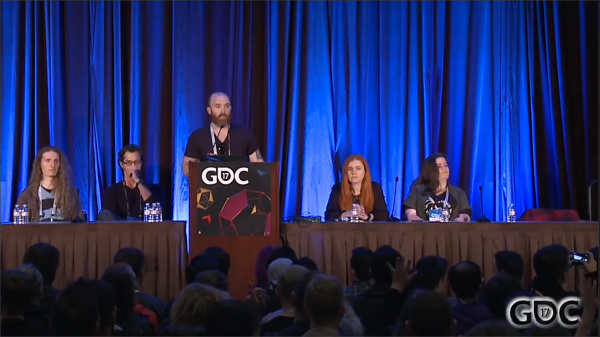 有声吗？能听见吗？ 好的，我叫Richard Lyons，是来自顽皮狗的概念，角色概念设计师 过去三年里我一直在那，跟着做完了《神秘海域4》，现在在做《失落的遗产》 还有《最后生还者 Part 2》 今天我想和各位聊聊...，（译注：未能听清）好像没显示出来 噢，我们可以直接切到展示上 好吧，我今天想和各位聊聊，额 在情境中展示你的角色，以及，为什么这样做可以避开刻板印象的坑 还能避免使用角色设计中千篇一律的套路
在我们说这点之前，我想先讲个小故事 有一天，我负责设计一个硬汉，一个吓人的粗野角色 我用了最普通的方法，可能在场所有人都学过的方法
现在在场的有多少概念设计师？ 喔，真好 角色设计师？ 耶，太棒了！
在大多数情况下，我们学到的其实就是用“一排”的形式来展示我们的角色，还有空无一物的背景
你懂的，跟着进度，展示各种服装设计
我也是这么设计我的硬汉角色的：水桶粗的大胸口、带疤的方下巴、夸张的姿势、攥紧的拳头，搭配上我设计的服装
其中一个搭配里，我让他戴上了眼镜
我当时正给一些人，创意总监，设计师，还有一些其他人展示这个
他们对眼镜的反应真的很有趣，当它们看到那个眼镜的时候，他们说“不不不，他不能带眼睛，这不是硬汉的象征”
马上我警报就响了 我没给这些人展示足够多的内容，他们只看到了全局中的一小部分，他们只能用这点内容来决定角色的形象、穿戴以及展示角色的方法 他们基本上是在靠一瞥就想得知整个故事 只靠造型语言和剩下的东西，对很多游戏来说这就很好了 《军团要塞2》，第一眼看过去，我们就知道那个又大又重的家伙低速高伤 但你在为《神秘海域》《最后生还者》这样的游戏工作的时候 角色的动机是可能完全是模糊的 我们甚至可能会想让角色在这一时间点被这样解读 又在另一个时间点被以另一种方式解读 这时这些套路和刻板印象就开始失效了
所以今天我要展示一下我在用的一种新流程
它还在发展的过程中，不过我已经有了一些不错的结果
正是它让刚才说过的角色戴上了眼镜
首先要说的是，我们的游戏是角色写实的故事驱动游戏
我做的第一件事就是坐下来规划叙事
 现在我们就使用一下Stephen King的《魔女嘉莉》
剧透警告！如果你还没看过《魔女嘉莉》的话，我接下来会剧透整个故事
故事的主角是一个具有念力魔法的女高中生
她上学的时候被孤立，被欺凌
然后最终没把握住分寸，用念力杀掉了所有同学
现在我们就使用一下Stephen King的《魔女嘉莉》
剧透警告！如果你还没看过《魔女嘉莉》的话，我接下来会剧透整个故事
故事的主角是一个具有念力魔法的女高中生
她上学的时候被孤立，被欺凌
然后最终没把握住分寸，用念力杀掉了所有同学
这就是我的工作风格，我做的就是先规划一个剧情线，你可以在这里看到这些小分镜 第一张讲的是她在学校开始了新生活，她很乐观，她很高兴 然后她有些被针对了，她开始胆怯，害怕 她被同学孤立了，变得孤身一人了 之后她被动手攻击了
再就是我画的、《魔女嘉莉》里血涌而出的名镜头，这里她遭到了毒打
之后她不再忍耐，开始了复仇，获得了力量并用它杀掉了所有人
以上就是我会最先做的事情
 之后我会收集参考资料，基于它们制作一个小型的排列展示
我们现在可以看到一系列参考资料，你已经能看到一些我们会要避免的坑
这里有一些非常好的角色，比如Ralph Macchio在《The Outsiders》里出演的角色，还有一些其他有深度的角色，左上角的是嘉丽本人
之后我会收集参考资料，基于它们制作一个小型的排列展示
我们现在可以看到一系列参考资料，你已经能看到一些我们会要避免的坑
这里有一些非常好的角色，比如Ralph Macchio在《The Outsiders》里出演的角色，还有一些其他有深度的角色，左上角的是嘉丽本人
之后你看到这里也有些非常老套的角色，得喝20啤酒才能觉得这些人有趣，像是《The Revnge of the Nerds》还有其他像是《Breakfast Club》里的角色 现在你已经注意到了，人们能对某些元素做出瞬间的反应 如果你想敷衍了事，那当然你可以把角色装扮的像《Revenge of the Nerds》里的那样，任何人都知道那个人是要被孤立的 这多亏了过去积攒的造型语言
于是我从左到右做了一个小排列展示 我想尽可能的让角色显得自然，但你也能感到这里有几个角色处在恰当的情景当中 就是说被孤立的情景 译注： 译者未能听清这句话 =_= 我选了这个角色,是因为她很可爱，体格比较小，身体本身并不是很强 而且因为她比较可爱，希望如此，你直觉上也会对她产生一些保护欲
接下来我会选择一个剧情节点 这里面会有我们自己的改编，游戏里会有主题性的节奏 对我们来说，游戏是非常电影化的，所以我一直都按电影的方式来安排节奏 从这里开始，角色在场景中的着装就开始变得重要了
啊，我错过了一个，这里我在挑选角色

所以让我们审视一下这些角色，在里面挑选一下
然后我们开始往场景里面嵌入角色
我们已经能看见，必须要有的元素并不是那么多
“角色该穿什么？”的压力越来越少了
因为我们能从这个场景看到她正受到压迫
 我们考虑镜头的结构，恶霸占据了镜头的整体，她被挤到一边
我们能看到表情、光影
所以当创意总监和艺术总监们看到这些镜头的时候，他们就能更理解这个角色
他们不需要依赖那些俗套的设定
在我们看过这些镜头之后，你会意识到
“嗯，我说，也许这里面有的角色太过了”
于是我选了这个角色，我觉得她自然，但看上去仍然有点害怕
我们考虑镜头的结构，恶霸占据了镜头的整体，她被挤到一边
我们能看到表情、光影
所以当创意总监和艺术总监们看到这些镜头的时候，他们就能更理解这个角色
他们不需要依赖那些俗套的设定
在我们看过这些镜头之后，你会意识到
“嗯，我说，也许这里面有的角色太过了”
于是我选了这个角色，我觉得她自然，但看上去仍然有点害怕
我们用镜头技巧保证她在视觉上受到了压迫， 我们的摄像机以高一胸的高度拍摄她 让观众明白，在这个场景里，我们是和她一起的
这时候你已经可以意识到，必须要有人决定服装 这些东西能提供更多的信息 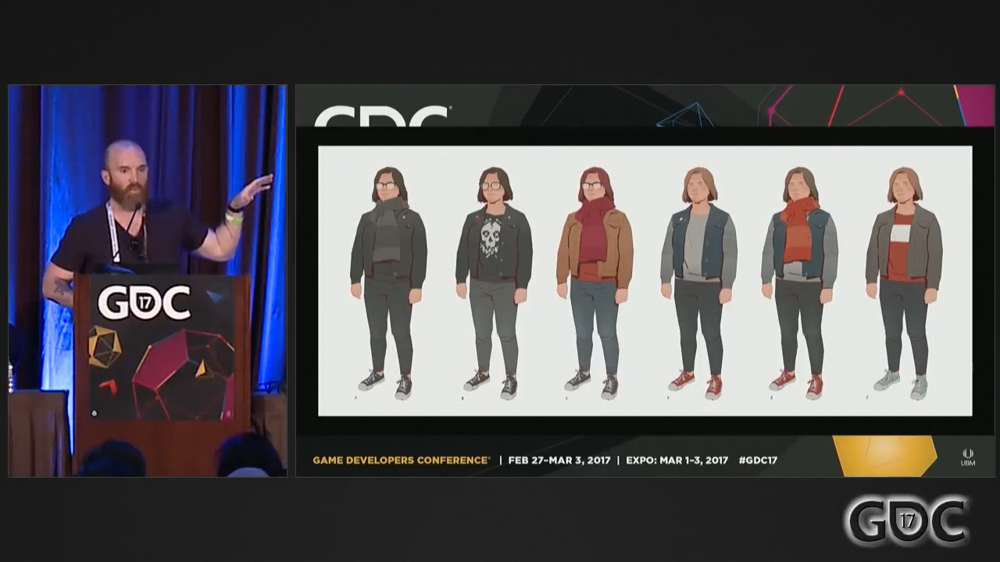 马上这些东西就不再那么有冲击性了 这就更像是“好吧，这是个蓝图，或者是创建一张角色卡的第一步” 这些会是创意总监审视的东西
这么一来，我们甚至可以直接把角色整个换掉，这个角色没必要是一个娇小的女生 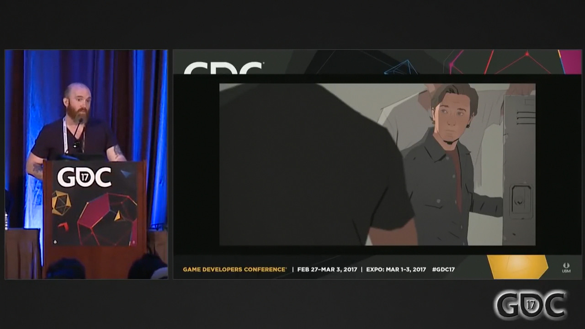 它可以是这个长得像Ralph Macchio的老哥，但他看上去仍然被压迫、被欺负 一下子，所有的刻板印象都被一扫而光了
如果从这里，我们回顾一下
看看我们的整个角色队伍
我会遍历每个场景
然后开始构建镜头

如果我们看看这些，比如这个，她开始了在学校的新一天 你能看到这是非常基础的镜头 她看上去很不错，她很开心，摄像头的角度有点低，她有些许的力量感 完美 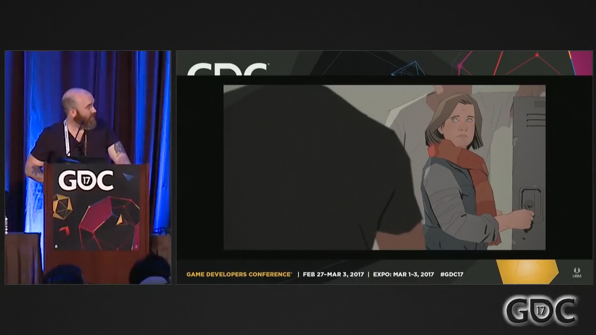 下一个镜头，她被欺负了，之前说过这个镜头了 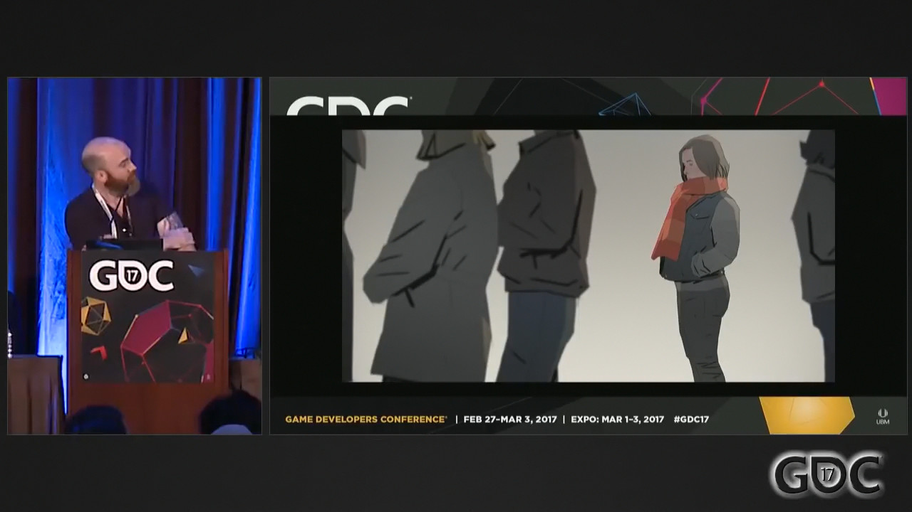 再下一个镜头，她被孤立了 这真的很简单，这张镜头的背景里面没有运动，很多这样的镜头，你都可以随便拍一下然后模糊背景 但就这张来说，这里面包含了很多信息，这种构图给了她一种孤立感 然后我们还加了一些别的东西，有不同的外表设计，她把手放在口袋里了 对技术民工或者类似的从业者来说，那个围巾、头发还有口袋中的手，都是马上就能意识到的难点
你懂的 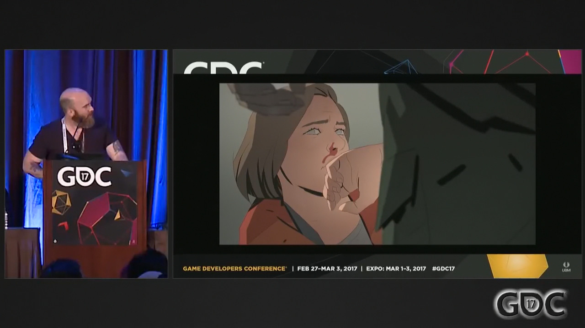 然后这张,她最终被伤害了，她很害怕 还是构图技巧在起作用，
 之后最后一张，她释放了所有力量，向这些恶霸复仇
这已经很明显了，这一系列改编中，我们有不同的构图，就有不同的态度，不同的东西包含在内
s
让我们把这些镜头拆解开，给她做一个快速的讲解，首先是新学校的开始，充满希望、紧张、兴奋
我们有一个强调中心的构图，中景拍摄，她稍稍偏离与胸同高的摄像头的中心，这是个非常基础的镜头
我在左手边的后方，用失焦的镜头加了一点暗示，让她看上去在和什么人说话
之后最后一张，她释放了所有力量，向这些恶霸复仇
这已经很明显了，这一系列改编中，我们有不同的构图，就有不同的态度，不同的东西包含在内
s
让我们把这些镜头拆解开，给她做一个快速的讲解，首先是新学校的开始，充满希望、紧张、兴奋
我们有一个强调中心的构图，中景拍摄，她稍稍偏离与胸同高的摄像头的中心，这是个非常基础的镜头
我在左手边的后方，用失焦的镜头加了一点暗示，让她看上去在和什么人说话
 下一个镜头我们之前说过了，这时她被欺凌了，被困住了，她很忧虑
这里我把她约束在镜头的右手侧，恶霸占据了镜头中的大部分空间，同样是与胸同高的镜头，暗示我们，作为观众，我们和她是一起的
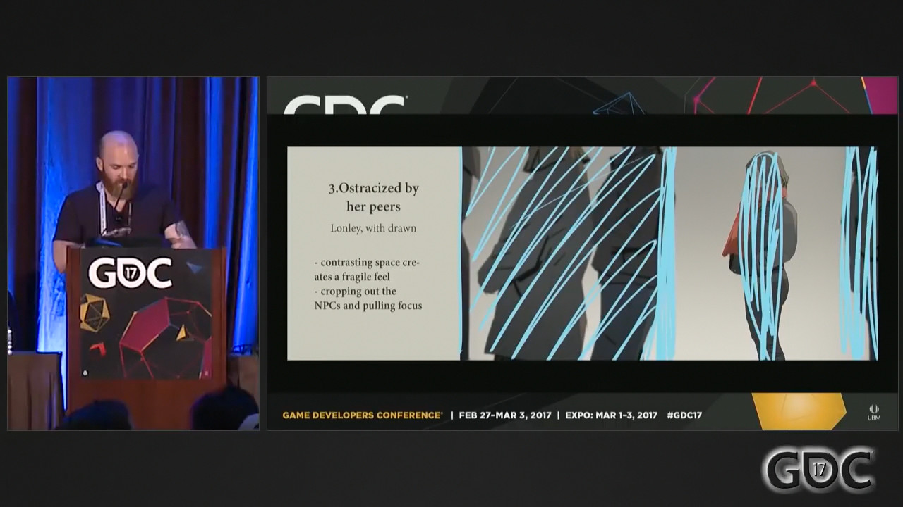
被同学孤立了，她变得孤独、内向
占据空间的对比也强调了这种感觉，我们也通过虚化NPC的方法，再一次把焦点转移到她身上
这是个很有力的构图，被人群孤立这种，我觉得是视觉上很有力的画面
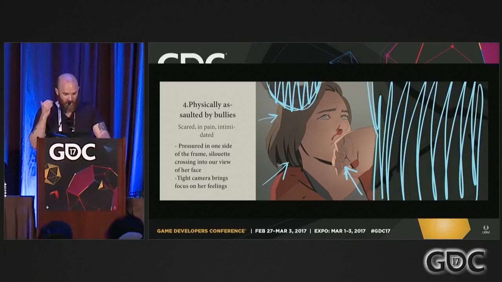
这一张，我们有明显的恐惧、痛苦和害怕
她被挤压到屏幕的另一边，恶霸的一部分占据了前景，还盖过了她的脸，这也是种非常有力的构图
同时我们也极大的拉近了镜头
这带来了很多额外的张力，作为观众，我们可以感同身受
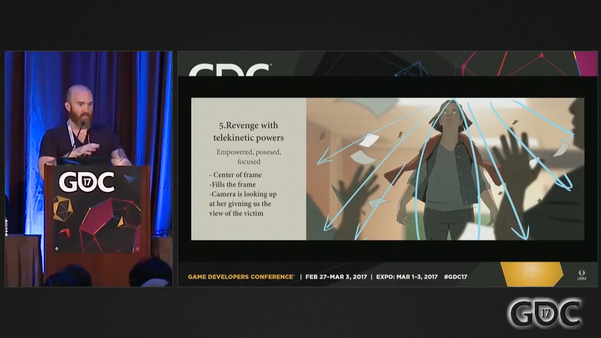
对影视行业的人来说，这都是非常明显的事情
但就个人而言，过去几年里我真的很痴迷于这些东西
因为这种方法允许我用不同的方法呈现我的角色，而不只是受限于“列队展示”
下一个镜头我们之前说过了，这时她被欺凌了，被困住了，她很忧虑
这里我把她约束在镜头的右手侧，恶霸占据了镜头中的大部分空间，同样是与胸同高的镜头，暗示我们，作为观众，我们和她是一起的
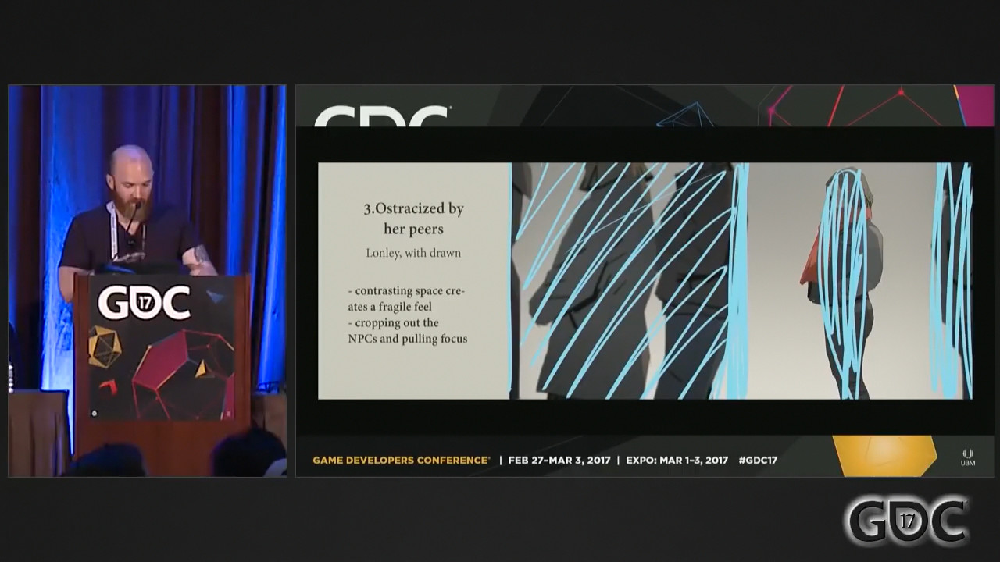
被同学孤立了，她变得孤独、内向
占据空间的对比也强调了这种感觉，我们也通过虚化NPC的方法，再一次把焦点转移到她身上
这是个很有力的构图，被人群孤立这种，我觉得是视觉上很有力的画面
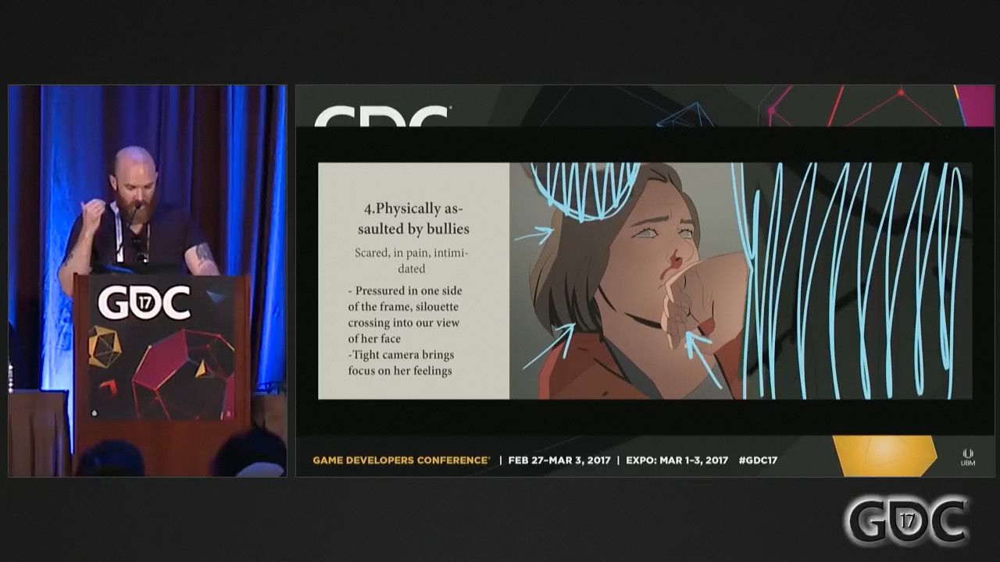
这一张，我们有明显的恐惧、痛苦和害怕
她被挤压到屏幕的另一边，恶霸的一部分占据了前景，还盖过了她的脸，这也是种非常有力的构图
同时我们也极大的拉近了镜头
这带来了很多额外的张力，作为观众，我们可以感同身受
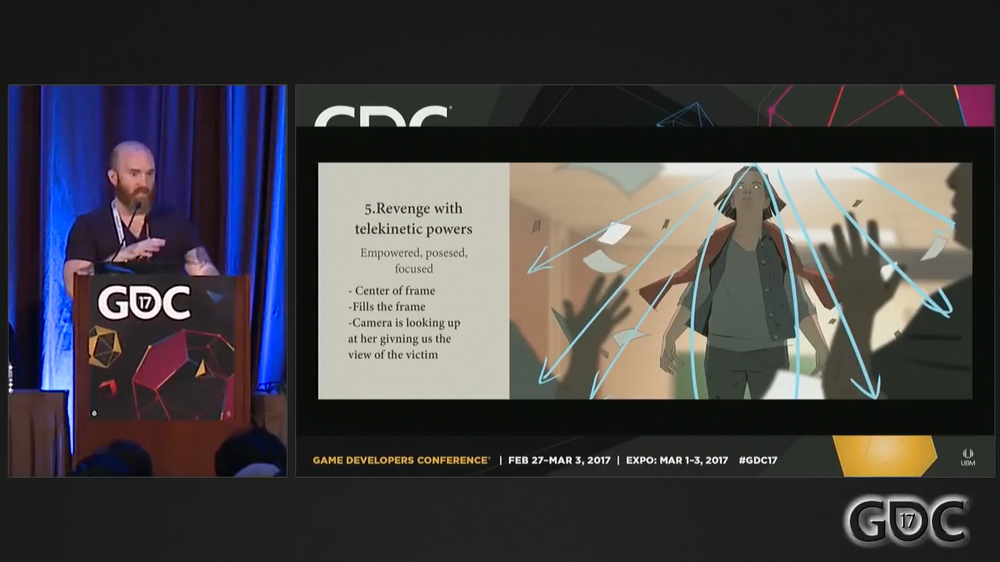
对影视行业的人来说，这都是非常明显的事情
但就个人而言，过去几年里我真的很痴迷于这些东西
因为这种方法允许我用不同的方法呈现我的角色，而不只是受限于“列队展示”
最后一张，她充满力量，处在中心 于是我们以她为中心构建镜头，让她占据整个画面 同时摄像机处在仰视她的位置 这就是说，我们基本上是用了受害者的视角，感受她带来的恐惧 这种画面真的很有力量，但这种技巧其实是非常简单的
我给我那个戴眼镜的角色也用了类似的构图，让他处在中心 其实他几乎都快突破镜头的上边界了，他双手交叉，透过眼镜俯视一切，一瞬间，所有人都爱上了这个概念 但早些时候，每个人都告诉我这种做法是行不通的 这种展示方式带来的不同，真的很有趣
我们可以简单在？间切换，我是说这就是同一个角色 如果我们只靠列队展示 你要知道你是很难获取这种信息的 我想这两个是对比最强烈的
看到这些伸出去的手，我想到另一件事
现场有技术美术吗？
技术民工或者类似的？
不错，你们真值那个钱
 马上的，这里有一堆需要注意的事情，我们看看这个服装，一开始她背一个背包，这是就一个部件了，她还戴了围巾，穿了夹克
马上的，这里有一堆需要注意的事情，我们看看这个服装，一开始她背一个背包，这是就一个部件了，她还戴了围巾，穿了夹克
 下一个镜头，她的手放在口袋里，看上去很简单，实际不然，特别是在实时渲染的时候
她的围巾现在看上去像高领毛衣一样，她的头部稍微被包住了一些，这里，头部要如何与实际的围巾交互？
仔细审视的话，你会发现这个围巾有很多令人着迷的东西
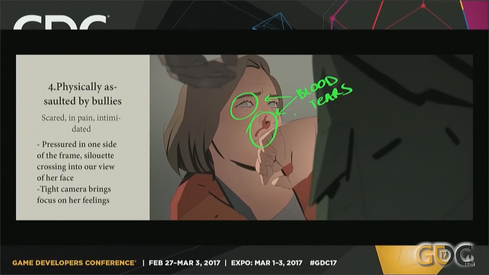
下一个镜头，她的手放在口袋里，看上去很简单，实际不然，特别是在实时渲染的时候
她的围巾现在看上去像高领毛衣一样，她的头部稍微被包住了一些，这里，头部要如何与实际的围巾交互？
仔细审视的话，你会发现这个围巾有很多令人着迷的东西
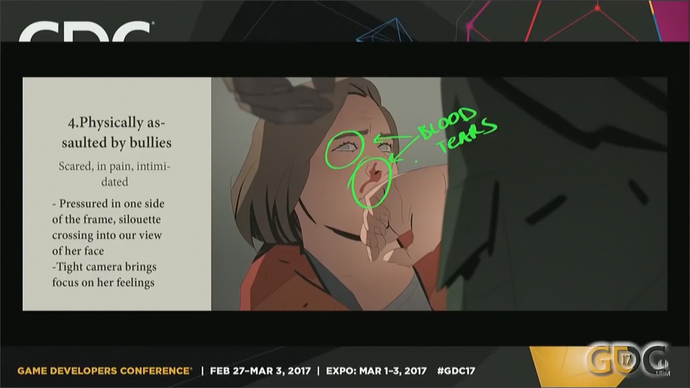
下一张，血泪，你的团队要如何呈现这种效果， 你的特效组...你得有一个角色组专门处理这类事情
 这最后一张可能更难，你看，她的围巾会散开，四处飞舞
她的头发飘的到处都是，还有夹克的两边也是如此
这些东西可能会属于不同的模型，不同的部件，你的工作室应该有对应的术语
把这些东西理清楚
对大团队来说也是量大的工作
这最后一张可能更难，你看，她的围巾会散开，四处飞舞
她的头发飘的到处都是，还有夹克的两边也是如此
这些东西可能会属于不同的模型，不同的部件，你的工作室应该有对应的术语
把这些东西理清楚
对大团队来说也是量大的工作
我们已经说了很多要点了。 目前我们所做的只是在尝试呈现自己的改编，但这就已经融入了很多信息了 这些其实就是一些我用老婆照片做的速写，我直接在上面接着画了 我让她换上我选的衣服，然后我就直接照着她的照片画，所以你懂的，我一晚上就可以赶出来好几张 对呈现角色而言，它们真的非常有用，我很推荐用这种电影式的展示法 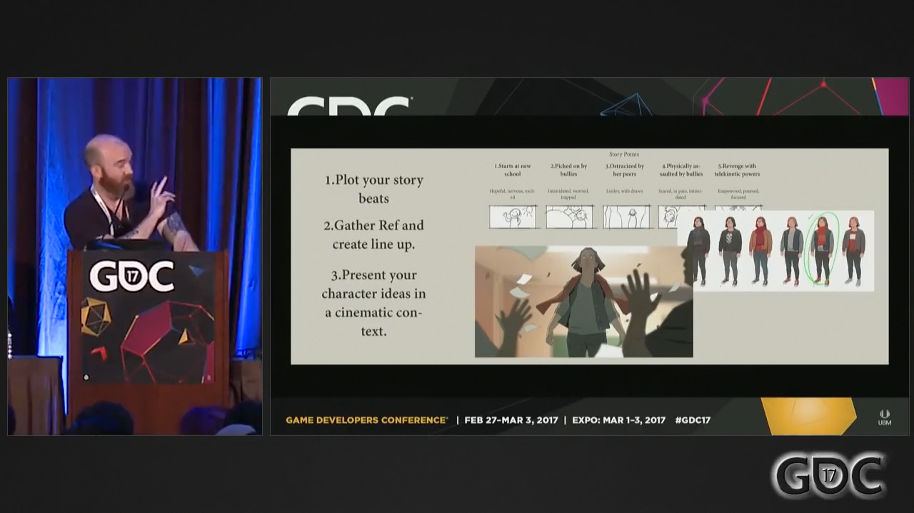 那么总结一下 这东西我其实可以说上几个小时不带卡壳的 规划你的故事节奏，了解你的故事 收集你的参考，制作一套列队展示 但是一定别就这么把你的角色送上去 这样做就等于强迫人们在管中窥豹的情况下做决定 而这很可能会造就一些不可靠的角色设计 用电影化的手法来呈现你的角色，就像这里展示的一样，你看，从列队展示到电影化的表现，这真的很有趣，我觉得你应该能注意到，后者拥有的情绪在前者里是完全找不到的 以上我给各位准备的全部小提示
感谢Richard，这真的非常炫酷，
对我来说是一种非常不同的思考角色概念的方式
那么下一个，有请来自Campo Santo的Claire Hummel，你们会喜欢的
Claire
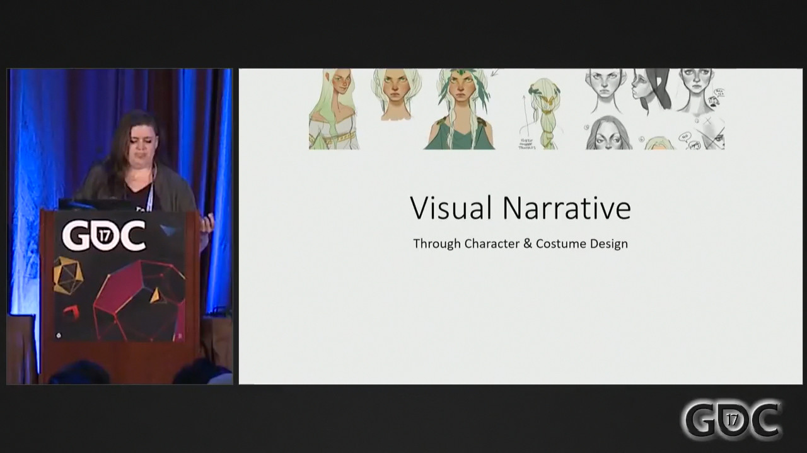
大家好，我叫Claire Hummel，他刚才说过了。 过去十年里的大半时间都被我花在了制作电子游戏上。 我在Xbox工作了差不多六年，参与过《神鬼寓言：传奇》、《日落过载》， 副业也给《生化奇兵：无限》做过东西， 之后又在HBO待了两年，参与了《西部世界VR》， 这个项目真的非常有意思，现在我在Campo Santo做一些我不能说， 但是很炫酷的东西 但他们会和《Firewatch》一样优秀的，我保证
好的，我想讲的是“角色和服装设计之中的视觉叙事” 主要是服装设计，因为我很喜欢这个 你能通过视觉元素来进行叙事、讲故事， 还能有效的传达性格、社会地位、文化、职业等信息，游戏中的功能性显然也可包含在内 我觉得特别有趣的一点是，对这些领域进行周到、详尽的研究，能让你避开Richard提到过的，那种游戏中流行的俗套设计 还能帮你做出算是独属于你自己的东西 这对设计领域而言是非常重要的 那么，理所当然的，当你开始设计角色的时候， 决定你的设计处在一个什么样的宇宙，是非常重要的 这话其实有点理所当然，而且有时候你说的不算， 你上头可能有一个艺术总监或者类似制片人的东西 但仔细考虑这些，并在推进角色设计的过程中整合这些信息是非常有价值的， 你的角色并不是凭空存在的 理解并建立这种更宏大的情景，让你能以一种很有趣的方式，在几种不同参数之间调整你的角色

像这样的分类法少说也有百万个，这里就是列出一部分光谱 明显合理的，有背景设定的时间点，是历史性的背景还是近未来科幻？诸如此类 是写实还是风格化的？这基本就是字面意思。还原性的还是象征性的？还原性的就是说非常现实的那种，“改编自真实事件”的角色设计，比如我们现在穿的衣服 或者你选择非常象征性的服装设计，像是《疯狂的麦克斯4：狂暴之路》、《第五元素 》里的那种东西 此外，我们当然避不开滑稽和严肃之争，有很多象征性但严肃、滑稽却非常靠向现实的游戏
说到背景设定里的时间，我绝对更偏向于历史风的设定，因为我就是靠这类设定起步的，这理所当然的成了我特别擅长的那部分 《西部世界VR》的工作是个有趣的挑战， 因为你不是要设计真实存在过的西部时代，你不是要设计十九世纪里真实存在过的服装， 你要设计的是带点幻想要素的、近未来主题公园里用的版本 所以对《西部世界VR》来讲，一种算是风格化，象征性的角色设计就变得非常重要了， 而如果你设计的是1860年内华达州里真实存在过的牛仔， 这或许就不那么重要了
其实在《西部世界》电视剧里，和我们在《西部世界VR》里打交道的角色中，有很多我正常会很鄙视的角色设计， 但因为他们看上去就是要显得套路，就应该像是从西部时代走出来的那搬，这种设计风格反而变得很重要了
Hector Escaton在右上角，穿着这种很有威吓性的皮夹克和牛仔帽， 这真的是太浮夸了，但他就是这种有着暗藏深度的浮夸反派， 在这种情境之中，他的角色设计是合理的
又说道写实还是风格化了，很明显我画很多西方的东西，有的是工作，有的就是...娱乐 左边的很明显是《西部世界VR》，剩下的则是我在Xbox时给《Gunpowder》画的东西 你看，你可以像这样使用同一种意象，再根据你制作的游戏，把它推动到不同的方向 还原性的还是象征性的？ 这不是我的作品，但这很贴题 我太喜欢《Journey》里面的角色设计了， 它们简洁却又如此有效 而且我很喜欢这种角色设计展现的，使用相对“低模”的、浅实深的角色设计，有些却能高度的象征性的特点
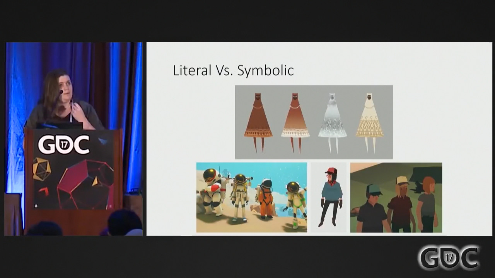
像《Journey》一样，这种设计没有在现实中相似、一一对应的东西， 而如果你看一下底下《Overland》中的角色，他们就更加有关联性，他们的服装也许现实里也真有人穿 这里还有一些还原性和象征性的例子，
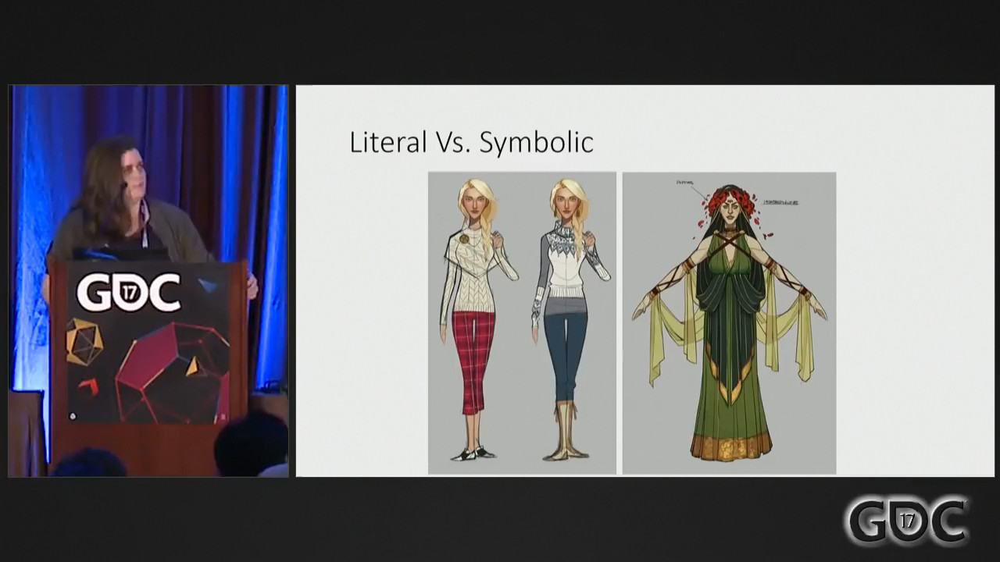
右边是给《Ryse: son of Rome》做的作品，这项目允许我们走爆表的神明象征主义路线， 服装、绸缎，所有的一切都是如此 左侧则是给《Power Star Golf》的作品，一个打高尔夫的少女，所以她看上去就会很...很普通
谢谢
这是另一个例子，一个胎死腹中的项目里的作品 没关系 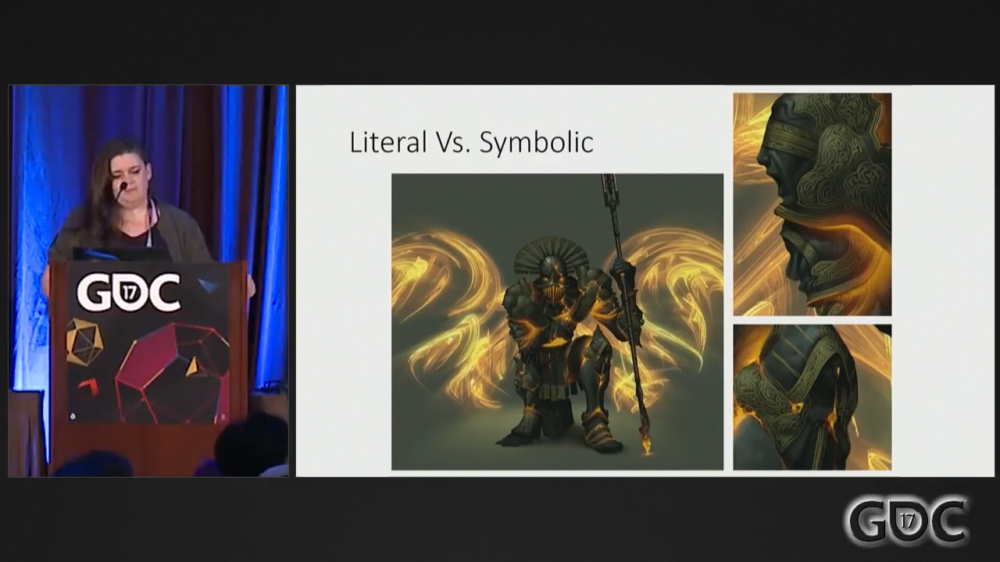 这是个很有趣的项目，它是关于堕落的天使的， 所以我们可以疯狂的用那些在写实类作品中绝对行不通的，各种象征主义的意象 你要设计一个疯狂的堕落天使，铠甲上布满了哭喊人脸的花纹，这真的挺有趣的

当然还有滑稽和严肃 我挺喜欢在Xbox工作，这代表着...因为我所在的团队， 我能为很多不同的项目工作 我离开的时候，我经手了大概60份游戏，大多数都没能活到发售， 但这对我来说仍然是很好的经验，很让人满足 我做的工作很多都是关于，就是我最喜欢的那些， 都是有关《日落过载》和《神鬼寓言：传奇》的
《日落过载》像是在一个奇趣礼品店里面设计世界末日， 真的很有趣 《神鬼寓言》，当然，已经是一个美学基调非常完善的项目了， 服装的造型语言、视觉设计上的考虑，都在故事和对话中得到了体现， 角色的特点很贴近传统英国幻想故事，这也是非常有趣的项目

如果在场有《The Adventure Zone》的听众的话，左边的是Magnus的画像， 这幅画是很欢快的，因为它来自一个以兄弟们瞎闹为主要内容的《龙与地下城》播客， 所以就算了画了迷彩短裤，又在下面加上鳞甲，这仍非常合理
然后来看看严肃的例子，左边是一些给《Abduction》做的设计， 中间的来自又一个没活到公布的项目， 右边的是《生化奇兵：无限》里的Robert Lou Tess 这也是个很好的游戏 优秀的角色设计可以拥有多条设计光谱之上， 但一个坚定、现实、严肃的现代角色并不会给他的质量打保票
记住这些非常重要，因为你希望你的角色能合理的存在于其所处的宏大宇宙的之中， 你的服务对象是故事、游戏机制、游戏本身这一整体，不可违背的主人 接下来的算是我的角色和服装设计三信条， 重点在服装设计上，也可以说是服装设计三信条，这也不差
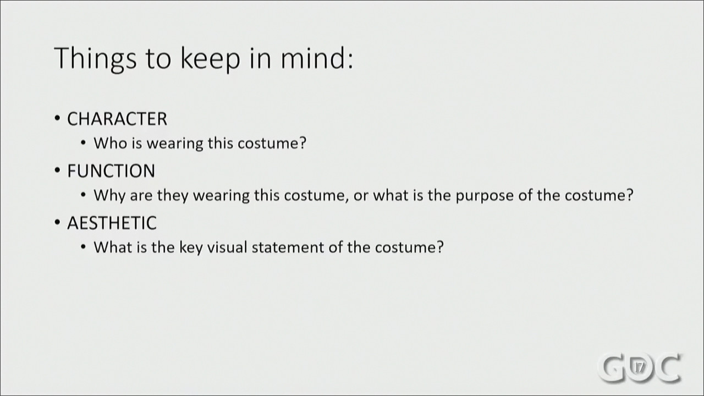
我倾向于把它拆成三个部分，角色，就是穿这些服装的人， 以及他们穿这些服装的原因，或者说这些服装的用处 以及美学，什么是这套服装的视觉意图
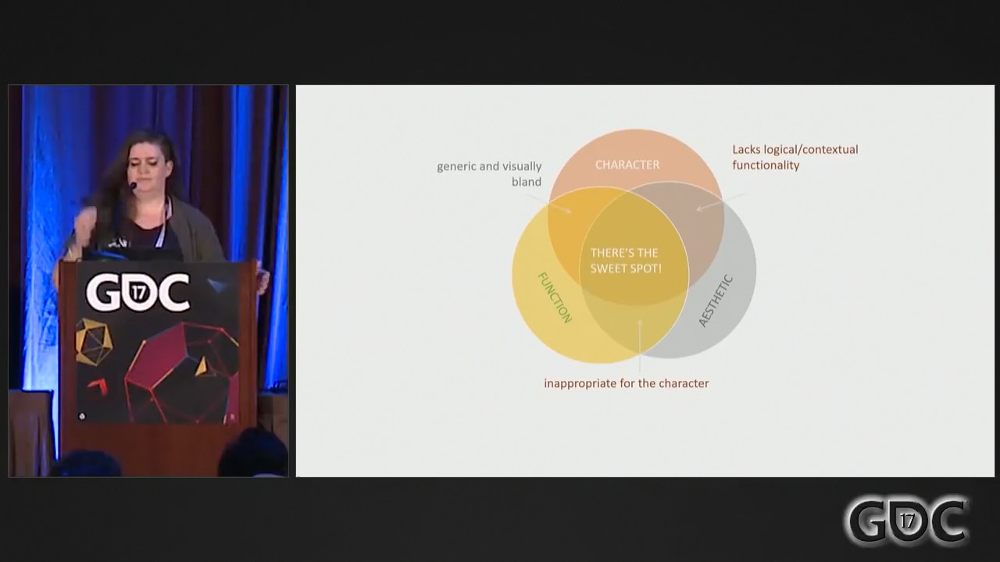
请看这个韦恩图，噢，不错，你们能在上面看到，我在这儿几乎看不到 不同尺度上的功能、角色和美学需要合力才能创造一个夺目的服装和角色设计 如果你仅仅搞清楚了角色和美学，那你创作出来的服装就会在故事情景中缺乏合理的功能 如果只有角色和功能，但看上去很无聊，那就会难以唤醒激情，你懂我什么意思 那么，角色，是谁会穿上这个服装？他们的性格、社会地位、体型等等都是什么样的？ 我认为角色的性格，和Richard提到过的一样，会在早期对整体设计产生很大的影响，它会影响姿态、运动、动画、行动之类的东西， 这就是为什么你一定要在设计角色的时候考虑到这些，并用尽一切手段， 在制作角色、调整角色的构图站位以及选择呈现给总监的方式，这类事务，的过程中， 反映出他们的性格
我在这方面的水平在不断提高
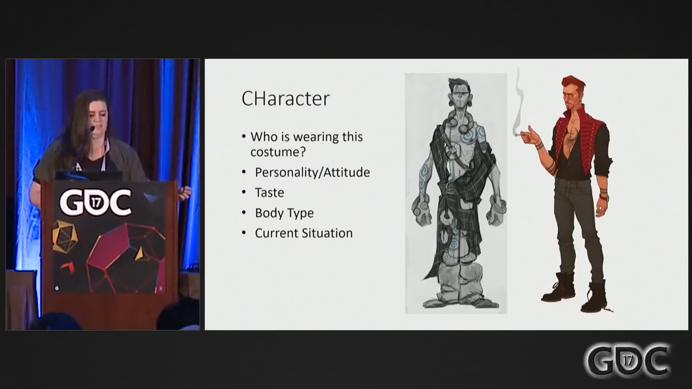
我们会认真思考这些角色会以什么方式来穿戴这些服装，是整洁还是邋遢的？ 在某个情境中，或者穿着某套衣服的时候，他们会觉得自在还是尴尬？ 这种思考可以以一种极具说服力的的方式来区分角色， 哪怕他们穿着一模一样的服装
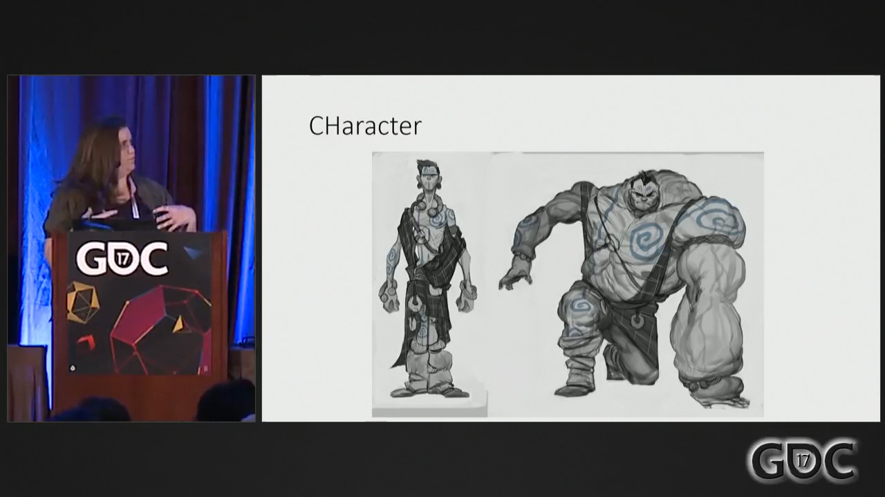
比如有的角色会觉得西装穿着很得体，而有的角色多穿一秒也不愿意 这是来自《神鬼寓言：传奇》的同一个角色，他在某个节点会“绿巨人化”， 这组图干净地呈现了在严格意义上的同一个角色身上， 其实是在一个态度、体型完全不同的角色身上，同一套服装会带来什么样的差别， 我们可以看到这种差别是如何塑造角色的， 你还能注意到角色切换状态的方式
你或许还会在偶然间看到他的裙底

功能，我真的很喜欢思考功能，这可能是我在服装设计里最喜欢的一块了， 而且研究起来也很有趣 这主要是关于“为什么他们要穿这种衣服”， 在这个世界里，他们的社会文化背景是什么样的？ 目的是什么？这是制服吗？还是正装？还是用来戏弄人的？等等 功能可以被拆解成很多话题，但大体来说就是关于“为什么”的， “我们任何人穿任何东西背后的原因”
思考这一点是很重要的， 如果过度正式的服装和你所制作的游戏的核心内容相冲突， 你是不会想某个角色穿这样的服装的
左边的来自《神鬼寓言：传奇》，我好像用了很多《神鬼寓言：传奇》里的东西， 右边则是《西部世界VR》中接待员的概念设计， 我们已经有给电视剧设计的女接待员服装了， 只需要配一个男用款式
这种体验很有意思，我们的设计参数相当于是已经被定好了， 他们应该是热辣性感的老兄，穿着低到过分的低胸衬衫， 我们只需要从这里开始着手设计就行了 他们存在的作用是很明确的
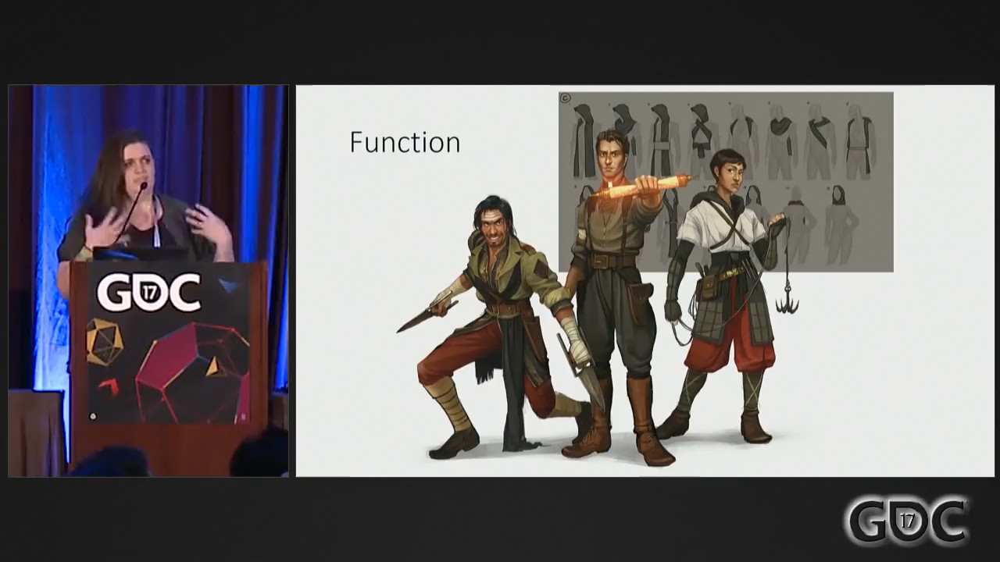
这个很有趣，又是一个被取消掉的项目， Xbox里很多这样的项目， 你可以注意到，右上角有一份兜帽围巾的设计图， 想法是这是一个世界范围内的秘密结社， 所以要想出一个服装部件，让他们可以用各种不同的方式穿戴， 用以代表结社。 设计了右边角色的人正站在房间后排，嗨，Pat
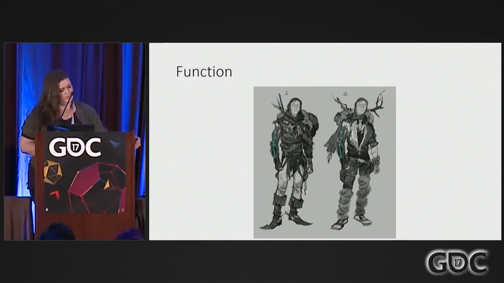
这张是给《龙鳞化身》设计的，《龙鳞化身》也不幸被取消了， 这话我都说腻了， 但围绕这套服装的作用展开设计是超级有趣的， 想法是这位老兄被从现代世界里剥离出来， 送到了一个中世纪风的幻想世界里， 所以要设计一个能反映他的出身，但也能同时表现其服装缓慢损毁的过程的服装。 这套服装也要随着主角开始获取中世纪装备而产生变化 而且他还必须要露出他健壮的龙臂

最后就是美学，服装最重要的视觉意图是什么？色块、造型语言、视觉符号一类的东西 我重绘了伊丽莎白的第二套服装，虽然这不是我的作品（注释：生化奇兵） 因为我认为有很多种方法，可以让你在留住夺目色块的同时， 仍然给予它一种拟真的历史外观，像是仔细考虑她母亲在那个年代可能会穿的衣服
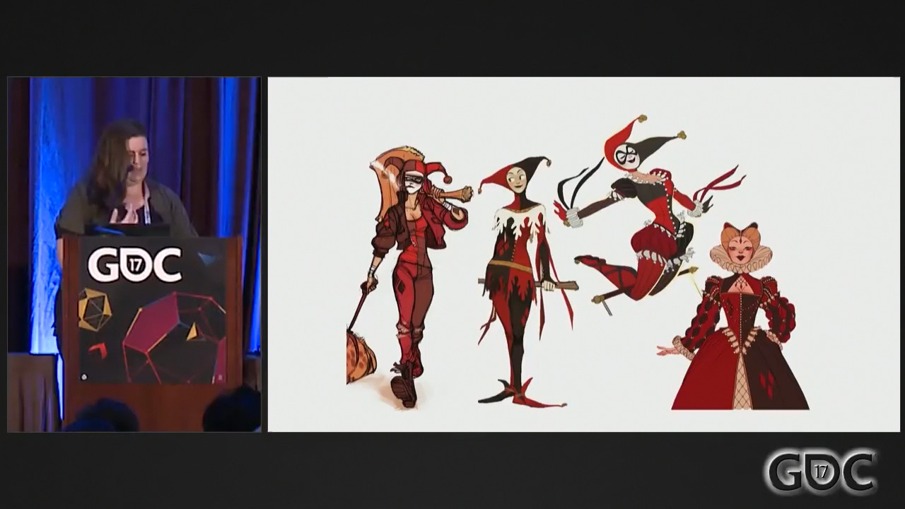
我在空闲时间常会想做一些有关哈莉奎因的设计，因为很简单， 但这是一个有夺目美学的角色的完美例子， 她的色块非常的象征主义，有很多哈莉奎因的象征， 还有皇冠图案，方块，红黑的派对色
你可以把这一整套东西应用到不同的历史时期，不管是十四世纪还是十六世纪， 又或者是维多利亚或者朋克时期， 但多亏了这种喷薄而出的夺目美学，你仍然可以分辨出这个角色
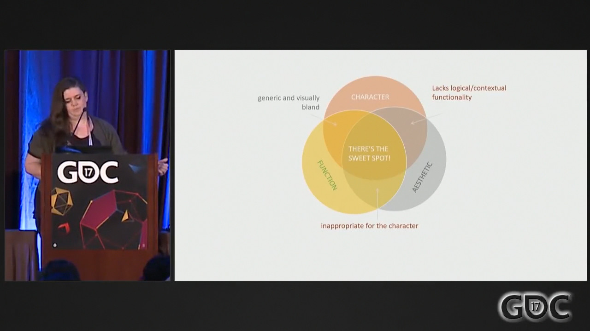
那么让我们再看一次这个韦恩图，它很重要
换句话说，请这么做：
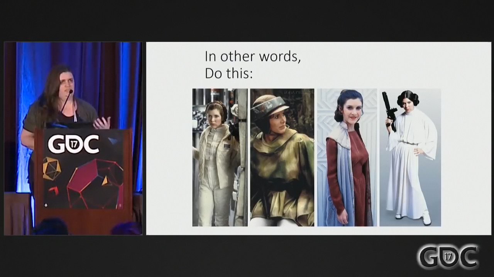
我认为莱娅在最初的三部曲里的服装真的是极好的， 它们具有夺目的美学，它们体现了她的角色，体现了她所处在的情况， 还体现了衣服的目的：是有实用主义理由支撑的？ 还是说她处在...她在处理像政治事务一类的事情
千万不要这样：
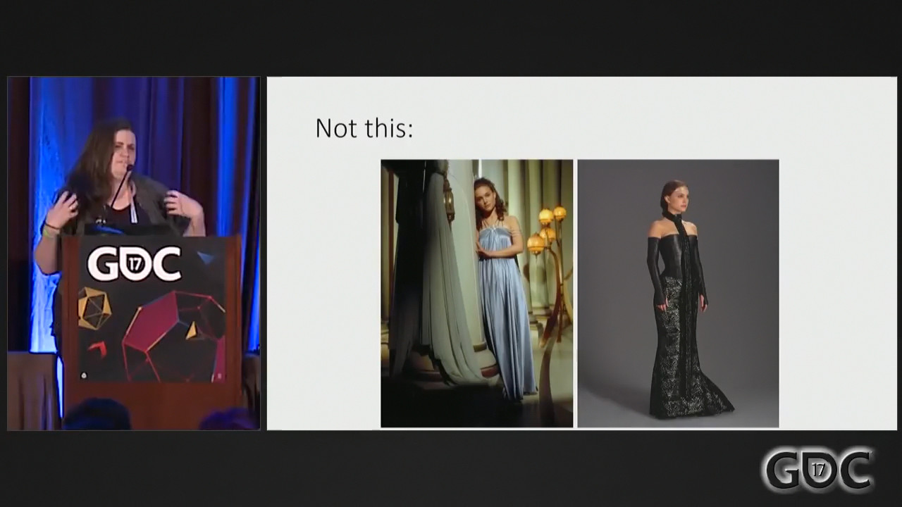
某人睡觉的时候还戴着一堆脆弱的珍珠链， 她的头发还是盘起来的，这糟的让人没法专心看电影了
又或者这个，她想放松一下，和心上人来一次烛光晚餐约会， 但她却决定要穿这些古怪的臂套，这简直不能再糟了，请千万别这样
当然，当你真的要把作品放进游戏的时候，和先前说过的一样， 你必须要接受一个事实，那就是在实际游玩里，技术上的限制会给你泼冷水的， 但这也没那么糟
因为有些时候这些参数会带给你一些有趣的启发，让你有反击的机会，

艾薇...艾维恩...爱比恩 来自《神鬼寓言：传奇》的某个角色， 我画了这个极其复杂的连衣裙，想 要做出这种藤曼环绕绝对是个棘手的活， 但我们最后还是找到了办法，我们把它们推到两边，进行分组， 这样一来这活就好做很多了
之后还有伊丽莎白，年轻的伊丽莎白，随着游戏的进行， 我们给她的衣服加上了会逐渐出现的损伤，用这样的方式来传达游戏的进度 传达她作为一个角色逐渐崩溃的过程， 划清她迎来巨变、换上第二套更糟的衣服的转折点
我差不多就该说到这儿了，有关检索和参考的部分我就不说太多了， 但请一定要这么做，这很重要，我们可以之后谈谈这个
最后，我给各位看看我高中时代画的兽控图，我现在画的东西看上去好多了，因为我研究了，我思考如何做角色设计了，所以请各位也这么做，谢谢大家
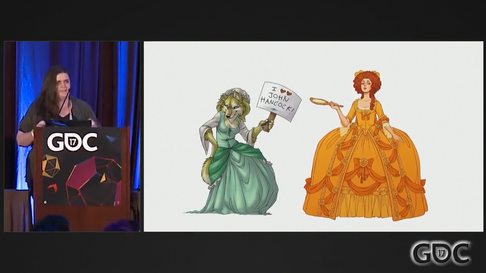
感谢Claire带给我们迷人紧凑的12分钟，这真的太棒了
好的，下一个，这场展示将永远的改变你照镜子的方式，
那么，欢迎来自暴雪娱乐的Laurel
Laurel
大家好，我叫Laurel Austin，我是来自暴雪娱乐的首席画师， 这次我是想聊聊概念美术和插画里，角色富有表情的面部 我在暴雪工作主要是给《炉石》、《星际争霸》、《暗黑破坏神》和《魔兽争霸》画宣传图 在我去暴雪之前，我最初在Splash Damage担任概念设计师，我负责后启示录第一人称射击游戏《Brink》的角色概念设计
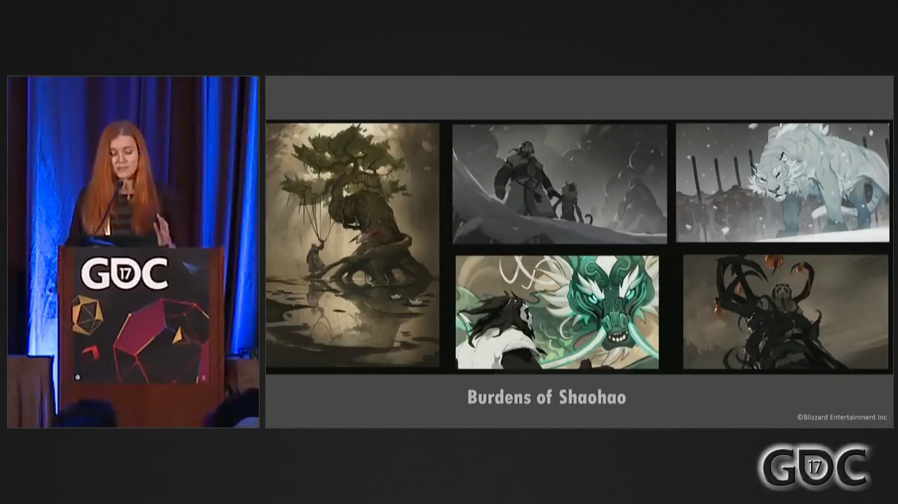
最近我给暴雪的2.5D电影项目画了很多插画，包括《Burdens of Shaohao》系列，这里有《Lords of War》和《Harbingers》画的作品 这些都是不太寻常的项目，这是那种由一系列动...插画构成的短电影， 我们的团队给这些插画加上了些许动画和视差，这不算是完全动画化的，更像是动态漫画和2D动画的中间物 我一直都很喜欢画脸，但我是在这些项目里， 真正理解了强调面部表情是如何强化叙事的 在这些镜头中，你跟随角色走过他们人生中一个又一个关键节点， 所以花精力来准确传达角色的情感状态是非常重要的
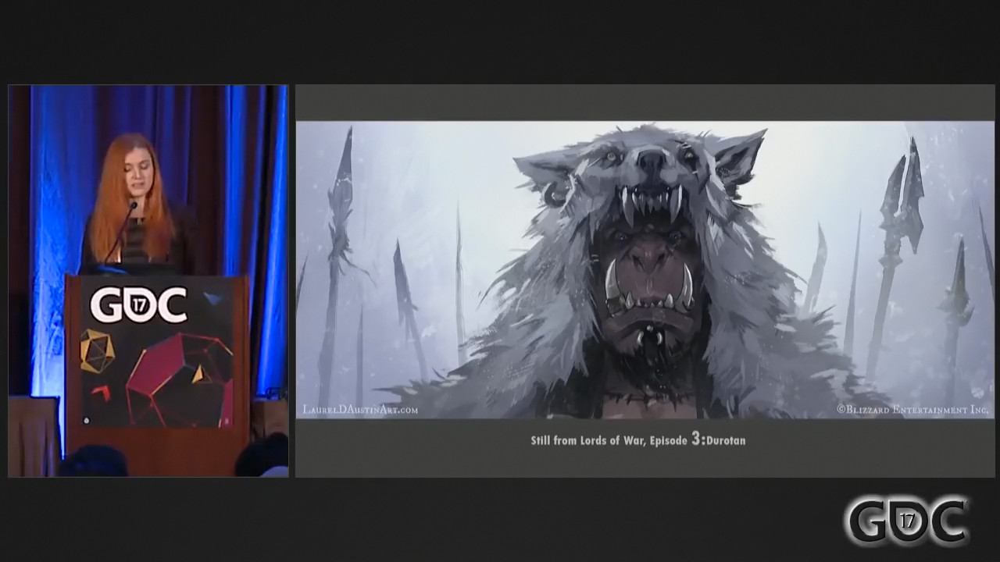
一个恰当的表情可以让你的角色处在他们的情境之中，讲述他们的故事，并让他们看上去真实 在我作为画师的职业生涯里，我发现一个得当的表情是和读者建立联系的最强工具之一 我发现这种理解改变了我处理角色的方式，现在我不管是做概念设计还是插画，我都试着用脸部来暗示尽可能多的故事和角色设定 今天 今天我要分享的是，一种我觉得很有用的，将表情进行分解，再将各组成部分作为艺术工具使用的方法 在座的大多数不需要心理学家分析也已经很熟悉基本的情绪了 具体的划分虽然还有争议，但考虑到本次展示的目的，我主要会谈及六种基础表情 快乐 悲伤 愤怒 厌恶 恐惧 和惊讶

表情本身就是一系列微小面部运动的组合， 我们应该把这些小的运动看作是我们角色表现的基石 我们可以直觉性的感知到很多这类运动， 但在现实生活中，察觉到一个表情的全部元素是非常困难的
在日常生活中，我们已经习惯从...从彼此的表情中读出对方的想法，当我们看到另一个人的表情时，我们常能直接感知到其蕴含的、传达给我们的情绪，而我们并不会注意到组成表情的各个微小元素 所以直接描绘表情或者情绪的确切样子可以是很困难的， 如果你问人们“快乐是什么样的？” 大部分人会直接说“微笑”，但大部分艺术家都知道“不，真正的答案要比微笑复杂得多”
那么，请保持耐心，接下来的几分钟里，我会拆解基本的表情，然后和大家一起看看其中一部分元素

这里你可以预见到嘴角会向上运动， 但人们常会忽视鼻孔同时也会被随之拉动， 嘴部的肌肉会被拉到两边，鼻孔的肌肉也是如此
第三个有关微笑的点是下眼皮会升起 这就是心理学家所谓的杜胥内微笑，是判别真诚快乐的微小和古怪虚假的微笑的关键点
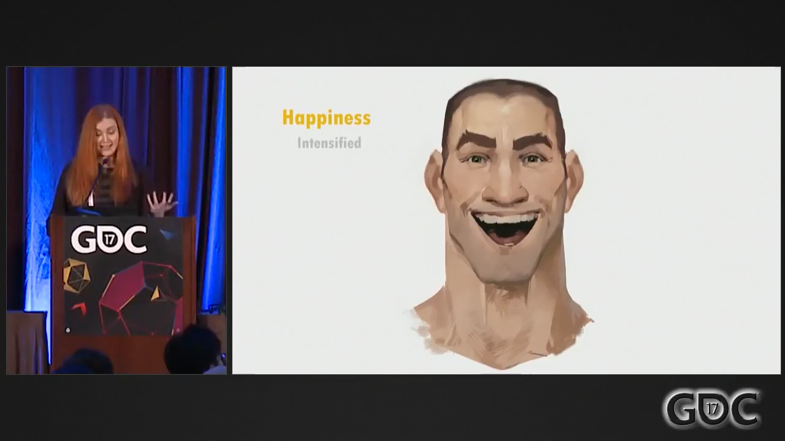
当我们拉高强度的时候，所有的特征都会有那么点走向极端 这是也会出现一些新的元素，比如眉毛的上扬以及嘴的张开 而说到悲伤，大部分人都知道嘴角会向下运动 但是人们常会忽略的一件事是，这种向下的曲线， 有一部分是由下嘴唇中部的向上运动形成的 此外，眉毛中部会稍微抬起，还伴有轻微的收缩
 悲伤特别好地展示了，微小的变化是如何给脸部印象带来巨大改变的
完全改变脸部印象所需的改变并不是很多
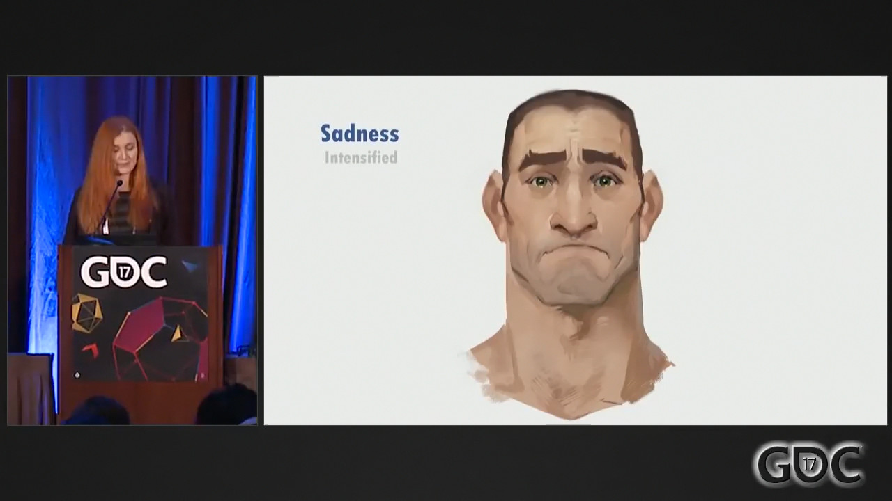
这里我们几乎没动脸部主体，只提高了嘴、眉毛的张力以及湿润的眼眶
就给大大提高了表情的强度
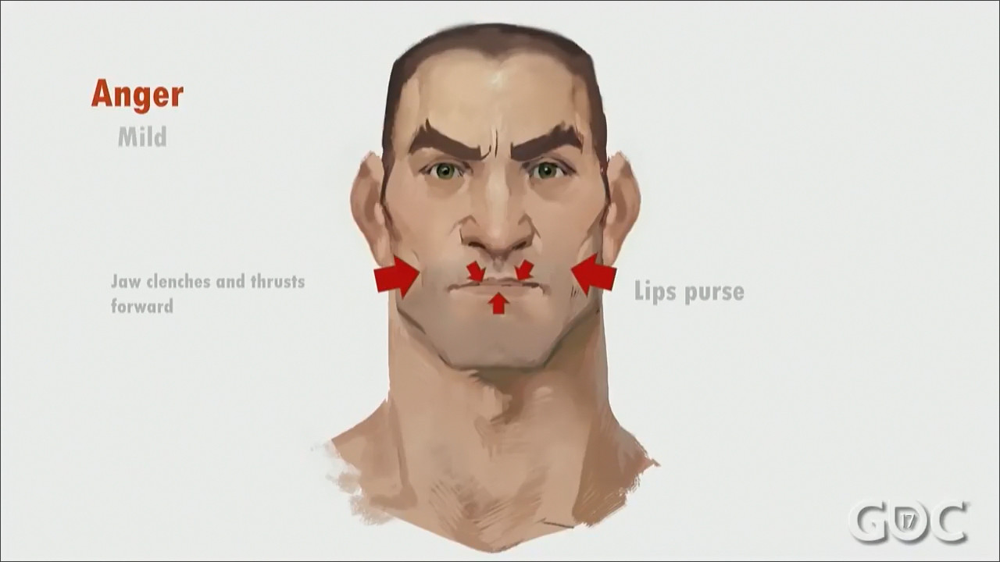
悲伤特别好地展示了，微小的变化是如何给脸部印象带来巨大改变的
完全改变脸部印象所需的改变并不是很多
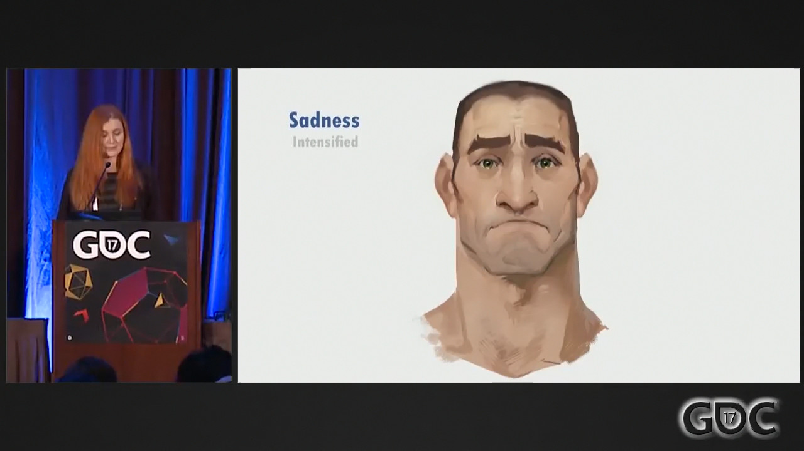
这里我们几乎没动脸部主体，只提高了嘴、眉毛的张力以及湿润的眼眶
就给大大提高了表情的强度
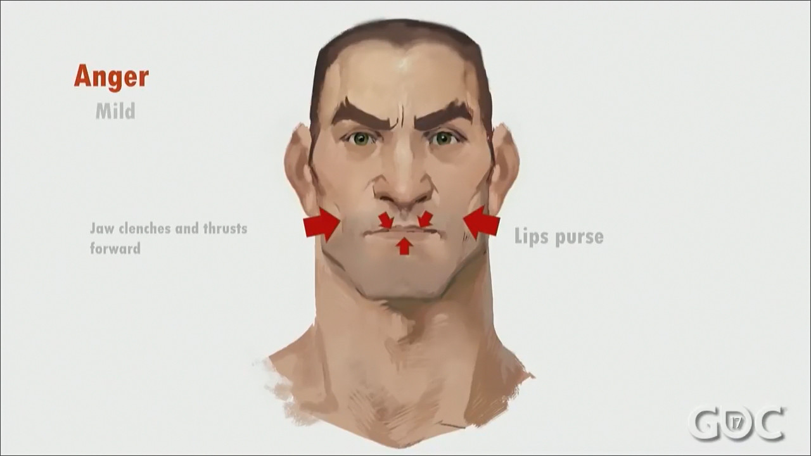
然后画师常接到的一个活就是画愤怒 轻微的愤怒稍微简单一点，但这位老兄仍然看起来很恼怒 他撅起嘴唇，下巴咬紧且前推，眉毛向下移动，鼻孔则是向上拉起 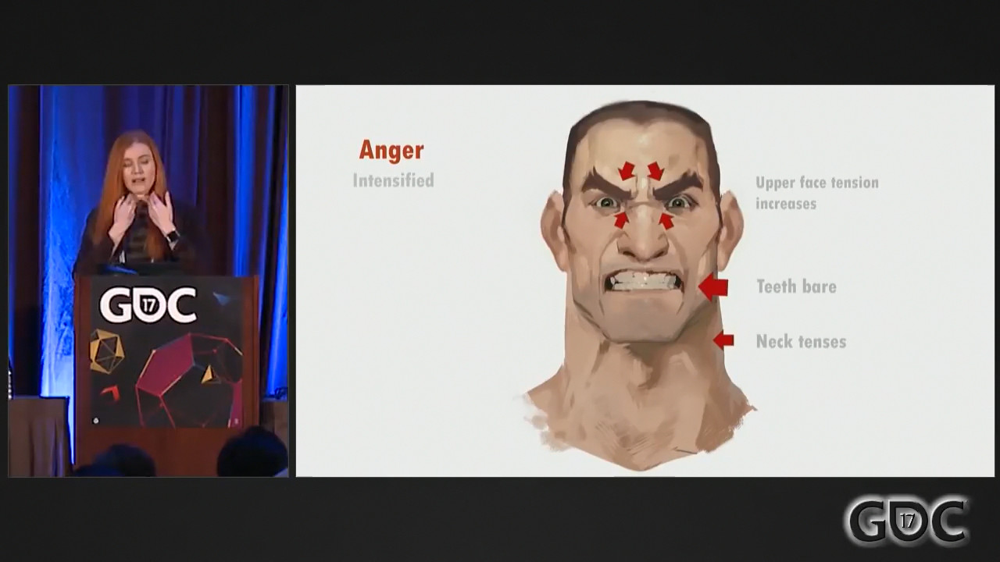
如果你强化这种愤怒，会发生一些令人惊讶的事情，你会发现上半张脸的张力明显增加了， 不同的肌肉互相对抗，产生了很多线条 但对于下半张脸，我希望各位注意一下嘴和脖子的变化 脖子和嘴唇的肌肉会深度交缠在一起，这基本上是颈阔肌的作用，
这其实是我最喜欢的肌肉之一 它是你脖子下面的一层肌肉，从脸的根部一直连到锁骨那里，就在皮肤下面 这就是漫画超级英雄脖子上那根线条的来源 就是漫画书里那种非常显眼的线，他们打架的时候能看到的那种 每当你的嘴角向下运动，这些肌肉就会被激活，那种线条就会变得很明显

关于厌恶，一种好的想法是把它看成是，你的脸部在尝试逃离那个触发厌恶的东西 于是嘴部和鼻子都会向上挤 嘴角会向下，眼睛会眯起来，眯眼睛的时候眉毛可能也会被带动， 但没这个必要
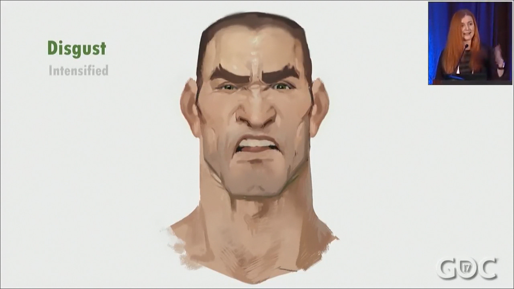
极端的厌恶也是一样的，所有的特点都被强化， 但额外的，舌头会稍微向外突出，好像你要吐出什么恶心的东西一样
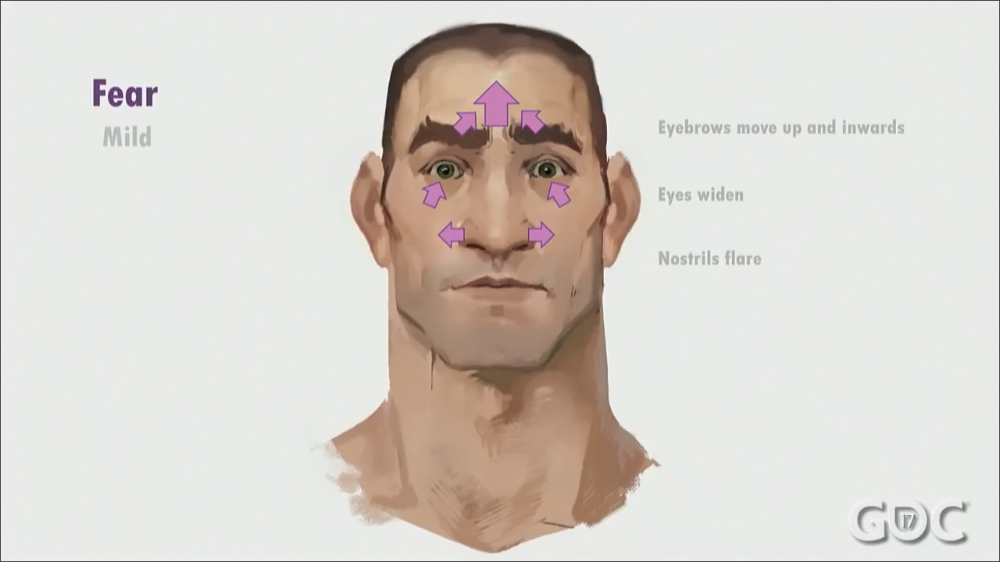
至于恐惧，眼睛会变宽，鼻孔会张开，眉毛会向上运动，也带点向内 嘴角也会向下运动
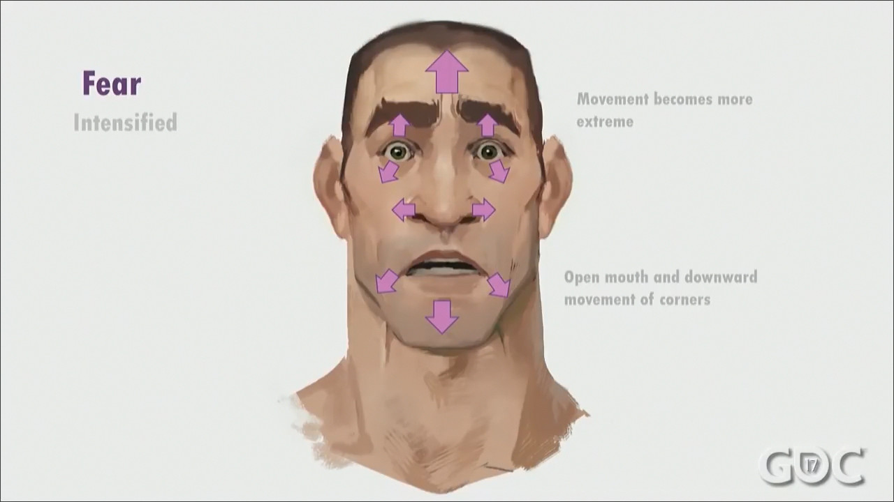
当你强化恐惧的时候，所有运动变得更极端， 嘴和鼻子或许会张开，像是深吸一口气的那种 这种鼻子的运动 其实和我们之前说过的快乐 非常不同，因为 这个其实在暗示一种鼻子里的肌肉吸进空气的感觉，所以是不同的
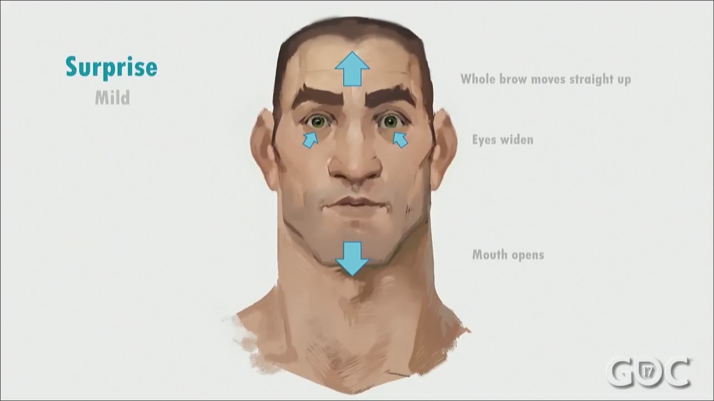
在惊讶的表情里，整个脸部会有一种垂直拉长的趋势 眉毛整体向上，眼睛会变宽，嘴也可能会张开 这张图里，虽然他的下巴稍微离开了一点，嘴唇仍然是闭合的，所以就算嘴唇贴在一起，你也知道这是一张惊讶的脸

对于极端的惊讶，嘴可能会完全张开，所有元素也是变得更加剧烈
这些东西都很简单的，我们每天都能看到别人的脸，我们知道这些微小的运动可以组成这些表情
但当我们把他们组合在一起的时候又会如何呢？ 这才是有趣的地方 我们可以把来自不同表情的部分组合在一起 这样一来，我们就能创造出真正有趣微妙的效果 如果我们把快乐的部分和惊讶的部分组合在一起 我们会得到什么？
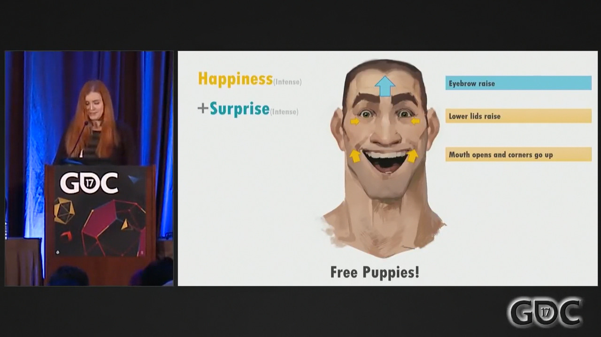
“小狗免费领？” 这里他的嘴张开了，嘴角上扬，就像快乐表情中常会有的那样，他的眉毛像惊讶表情那样稍微升起 而且还有升高的下眼皮，意味着他真的因为小狗感到高兴 如果我们把惊讶换成愤怒会怎么样呢？
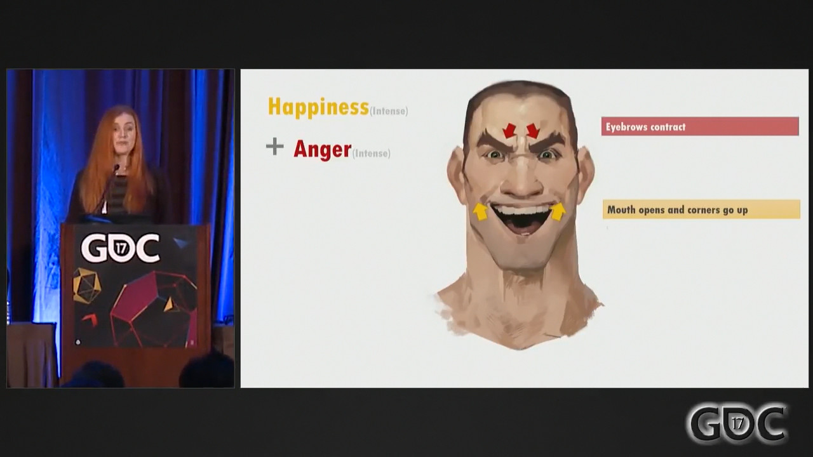
嘴的位置其实一模一样，完全没变，但他的眉毛在向里挤，造就了一张用于完全不同的故事的脸 注释：恶霸撕碎了你的素描本 一个我高中时候发生又好像没发生的故事
你也可以以不同的方式组合同两种表情 如果我们降下强度，把些许的愤怒和些许的高兴组合在一起， 你就得到了非常有用的愠怒
 这种表情常见于游戏封皮，偶尔在活生生的人类脸上出现
这种表情常见于游戏封皮，偶尔在活生生的人类脸上出现
这里眉毛会稍微收缩 下眼皮稍微抬高，嘴角也有些许上弯 有的时候我们会给特定的故事时刻出作品
这里就是惊讶和恐惧

比如你的孩子倒车的时候撞上了邮箱
这里嘴会张开，眼睛变款，眉毛像恐惧表情里的那样收缩，
而眉毛抬高的程度会增加
我们的恐惧其实有很多...包含了很多非常相似的表情，
他们共同有用很多相似的元素，你需要去找到各个表情都有哪些标志性元素
就这个例子而言，眉毛的收缩就是非常重要的恐惧指示物
但如果我们的故事改变了，我们需要加入第三种表情呢？
比如说厌恶？
 这种表情更适合这样的故事
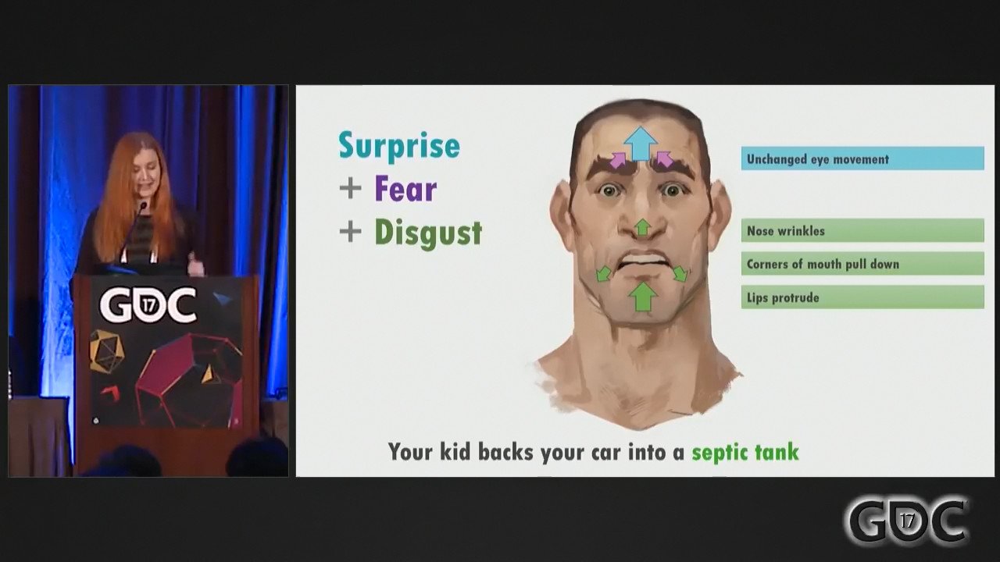
这种表情更适合这样的故事
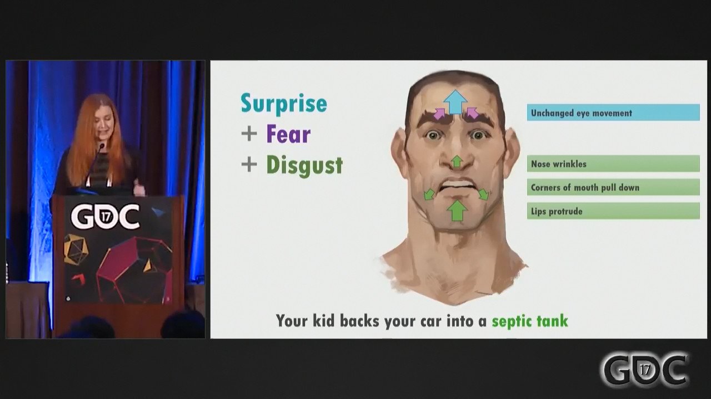
这里眼睛的运动也是没变的 眼睛的运动没有改变，因为厌恶并不是一种和眼睛关联很紧密的感情 但鼻子会起褶，嘴角会向下，嘴唇会突出，可同时保留了恐惧和惊讶中张开的嘴 你甚至可以把截然不同的表情组合到一起，来创造一种特别好的效果 把不同表情的几个部分组合在一起，看看能得到什么样的印象，是很值得试一试的 那么，我们如果提高绘制富有表情的面部的能力呢？ 随身携带一个镜子，关注你自己的脸的样子，在学习基本表情的时候，用镜子来尝试很多东西
Justin可以作证，为此，我在工位上确实有个镜子 研究解剖学，脸上有很多肌肉，你不需要完全了解他们， 但对主要的肌肉群有个认识，可以给你理解他们互相影响、如何作用 又如何形成一个整体带来很大的帮助
对基本的表情元素进行混和和匹配是我找的一个， 能有效帮我理解更多复杂表情的方法， 我给各位展示的只是可能性的冰山一角 到最后，这感觉基本和油画是一样的， 你可以用一些这个，把他们加到一堆那个上， 你能得到无尽的可能性
像是疯狂、自大、急迫这类东西，如果我们能加入一些意料之外的东西， 他们就会变得更有味道 用这种方法学习面部表情，让我得以塑造有层次的角色， 我希望各位也觉得这有帮助
感谢Laurel，这真的很棒，扩展了眼界，非常酷
最后，但绝对不是最不重要的，有请来自D-Pad Studio的Simon
Simon
嗨 我叫Simon S Anderson，我是《Owl Boy》的美术总监，来自D-Pad Studio 《Owl Boy》是一个重点突出了飞行机制的像素平台动作类游戏 如果你在期待有关3D的展示，那你不幸来错地方了 这有人玩过《Owl Boy》吗？ 太好了，真的有人玩过
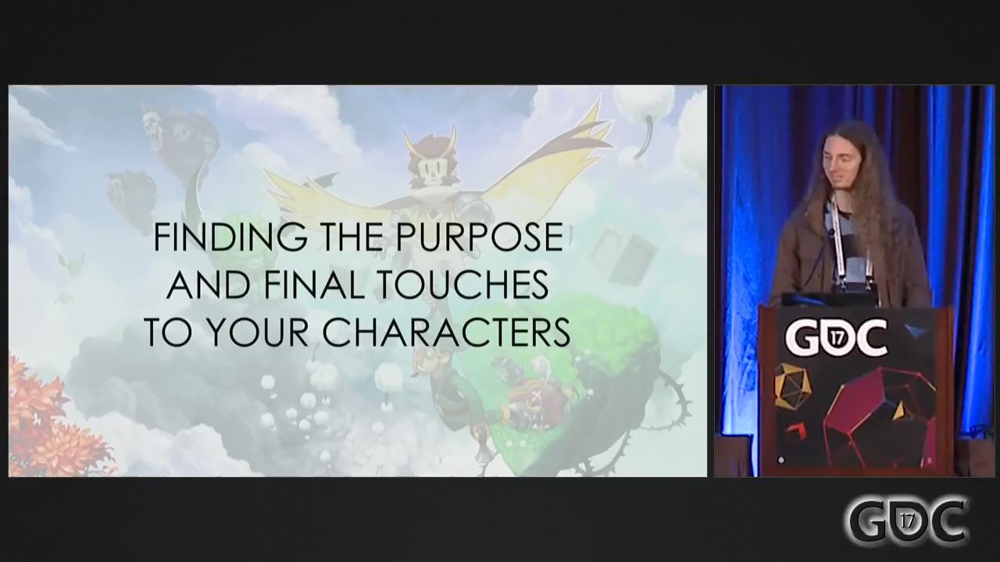
好的，我接下来要讲的是“找到你角色的用途，并加上点睛之笔” 因为很多时候，你大体上知道你想要什么，但不是那么精确，我不会一一灌输给你具体的做法，请在我的内容里找能为你所用的东西，剩下的就扔掉，好吗？ 大家都准备好了吗？好的，即：长标题，好好好
这是我做的游戏，非常好看
 然后这些是我设计的角色
然后这些是我设计的角色

他们也都很好看
好吧，那么首先，你设计的目的是什么？ 这就是说，情景和目的需要被整合到你的设计的外观之中 你游戏的受众是谁？你游戏中的这个功能是什么样的？ 这个设计如何与你已经准备好的宇宙相容？
第二点，如果你知道设计的目标，但仍然觉得有点不对劲的时候，你应该怎么做 在座的大部分已经熟悉诸如强轮廓，色彩理论，抽线造型和主要角色特点之类的东西 特别是这些人已经讲了很多了 但有的时候，你已经用上了这些东西，但你的设计仍然不太奏效
那么，让我们从设计的目的开始 首先，我会用一些例子来讲讲，角度是如何让你的设计变得更有趣的 为了做到这一点，我要提到一个非我设计的游戏 就是这些
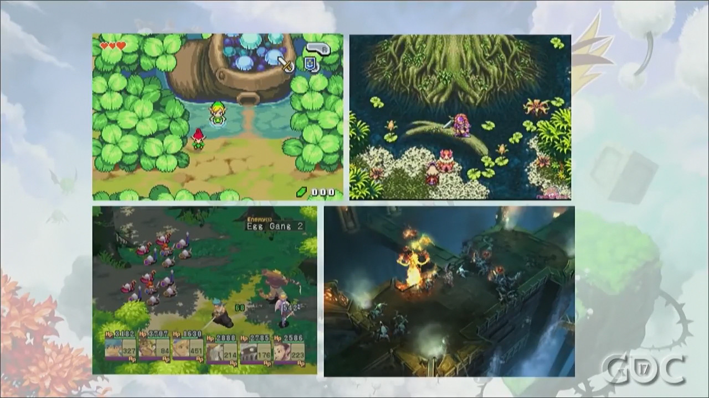 这里有《塞尔达传说：缩小帽》、《圣剑传说》，《龙战士》，这些都是俯视游戏，你只有特定的视角 而且他们...我准备了手写的备忘录，真不错 一部分项目会要求你从特定的角度来体验游戏，特别是2d和像素风的游戏，有时候3d也会这样
一般来讲，如果你在大部分项目上都用了同一个视角，那你就会习惯这个角度，所以你会想尽可能的复用你设计的资产
因此，你选择的视角对你的角色设计来说是非常重要的 现在各位常把这种决定当成是理所当然的，是客观世界的一部分 但我们用林克举个例子
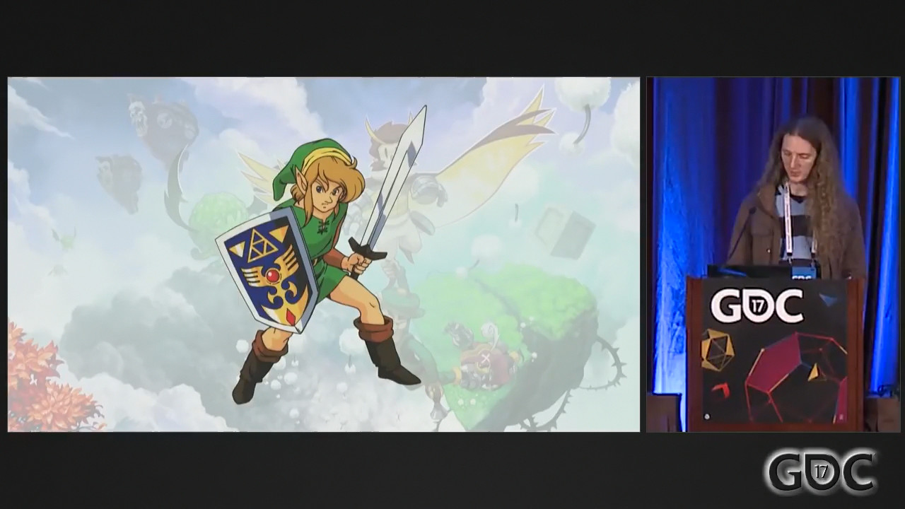
如果你仔细审视一下这个设计，你会发现重点多在头发和帽子上
因为在俯视视角里，这就是你会看到的部分，比如这些
和说明书上的相比，这些是非常不同的图像
 对头发的强调是非常重要的，因为你能看到的就是头发，而躯干的大部分你都看不到
从角色设计的角度来讲，他看起来可能有些缺少层次
注意，这明显是个为低像素设计的角色，那时的主机的内存不是很多
对头发的强调是非常重要的，因为你能看到的就是头发，而躯干的大部分你都看不到
从角色设计的角度来讲，他看起来可能有些缺少层次
注意，这明显是个为低像素设计的角色，那时的主机的内存不是很多
然而，如果你把这个设计和比较新的对比一下 你大概能看出来它是如何演变的，现在中部身体和携带品上有了更多的强调 我的意思是，你可以看到背上背着的盾牌，还有那个精致的宽皮带， 但这其实是有目的的，这是在告诉我们，角色的中心同时也是质心所在 这不是你添加的那种随意的特征，
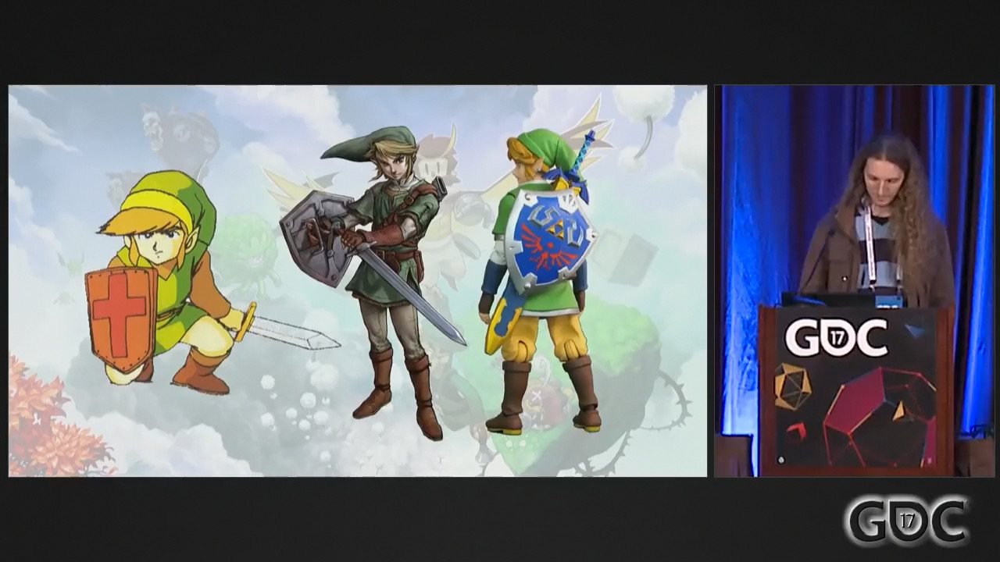
此外，我对之后的塞尔达游戏复用了《风之杖》的设计毫不感到惊讶，
 再一次，重点转移到了头发上，而且帽子也还在
而关于下半部分身体的强调就很少了
再一次，重点转移到了头发上，而且帽子也还在
而关于下半部分身体的强调就很少了
我的展示是按章节来的
我想做个脚注
花时间好好想想，你给你的角色选择特定的造型的时候
是因为它就该如此，还是说，它有功能性的目的？
 好的，接下来是一些设计理论中的经验法则
这里有一些我希望各位注意一下的简单规则
重复一次
你可能已经很熟悉轮廓、身体造型之类的实操了
但我想让各位关注一下其中的这两个
重复色块和连续模式
找到色块是非常简单的，而且对任何设计来说都是极好的经验规则
基本上你给你的角色挑选特定的一组颜色，然后保证它们愉快地贯穿于整个设计之中
好的，接下来是一些设计理论中的经验法则
这里有一些我希望各位注意一下的简单规则
重复一次
你可能已经很熟悉轮廓、身体造型之类的实操了
但我想让各位关注一下其中的这两个
重复色块和连续模式
找到色块是非常简单的，而且对任何设计来说都是极好的经验规则
基本上你给你的角色挑选特定的一组颜色，然后保证它们愉快地贯穿于整个设计之中
 我觉得《街头霸王》就是一个很好的例子
注意这里大部分角色，此时的颜色都重复出现了不止一次，而且占据了很大空间
如果选择太多的颜色，画面就会有些杂乱和不连续，当然，这还得看你做的是什么项目
忘了我要说什么了
如果有些东西看上去有点奇怪，或者你感觉它不连续，那就做一个快速的色彩检查，看看其他颜色有没有重复或者你是不是选了个奇怪的底色
或者，就这一点来说，它们是不是太相似了
你一也可以打破规则，加上一种主色调
要知道你选择的颜色范围可以美妙且分散，但选一个不重复的统治性颜色可能会惊人地令人满足
我觉得《街头霸王》就是一个很好的例子
注意这里大部分角色，此时的颜色都重复出现了不止一次，而且占据了很大空间
如果选择太多的颜色，画面就会有些杂乱和不连续，当然，这还得看你做的是什么项目
忘了我要说什么了
如果有些东西看上去有点奇怪，或者你感觉它不连续，那就做一个快速的色彩检查，看看其他颜色有没有重复或者你是不是选了个奇怪的底色
或者，就这一点来说，它们是不是太相似了
你一也可以打破规则，加上一种主色调
要知道你选择的颜色范围可以美妙且分散，但选一个不重复的统治性颜色可能会惊人地令人满足
下一项，我们要说的是连续的模式 这个幻灯片好像放错了 算了 别在意
我们常常给角色加上一些小细节，微小的艺术设计， 而我们会忘记某些不断出现在角色身上各处的形状或者线条本身， 就可以是更加宜人的
如果你用了多个决定性的形状，那有些东西就会变得很奇怪
我会用我自己的主角做一个有关这一点的好例子
 这是Otis，他是我的游戏的主角，挺不错的
我之所以说他挺不错的，因为这是份来自大约10年前的速写
这是Otis，他是我的游戏的主角，挺不错的
我之所以说他挺不错的，因为这是份来自大约10年前的速写
实际上他看上去挺糟糕的，他身上有一些基础的想法，让我指出来的话，你可以注意到他又一些几乎看不见的眉毛，他有像是鬓角一样的东西， 他脖子上有个棋盘格子一类的东西，无奇的手， 我能找到的唯一了的模式是脖子周围的一圈黑和脚部的线
让我们穿越时间，这是他最终的样子
 最终版本的不同之处可能有些微妙，但我会一一指出来
就形状来说，他的设计充满了尖锐的部分，
如果你注意一下头发、鬓角、眉毛还有鞋尖，这些都是尖的
此外，他脖子部分的绒毛偶然地镜像了他鞋子的形状
最终版本的不同之处可能有些微妙，但我会一一指出来
就形状来说，他的设计充满了尖锐的部分，
如果你注意一下头发、鬓角、眉毛还有鞋尖，这些都是尖的
此外，他脖子部分的绒毛偶然地镜像了他鞋子的形状
我也用了色块 就像这里展示的这样 鞋子和斗篷...等等，没错，鞋子斗篷和头发是同一个颜色， 这位老兄的毛衣和眉毛也是同色的
同色还有他的毛衣边和脖子的容貌，他的皮肤和裤子的颜色很像， 这是故意的，是为了让他的脸不那么突出
这里唯一突出的元素是他的手套 这是因为，他们是游戏中的主要元素，如果你玩了《Owl Boy》， 你就会知道游戏里有很多运东西的环节，所以你会希望一直能看到他的手套
但一定要确认它适合整体的主题 我还加了两个挂着的古物一类的东西，你跑动的时候就能看到它， 这样一来手套突出的感觉就不那么强烈了
然而，我想阐明我的观点：当你构建主要形状的时候， 高分辨率会让你难以找到正确的形状 特别是你在画一些精灵的时候 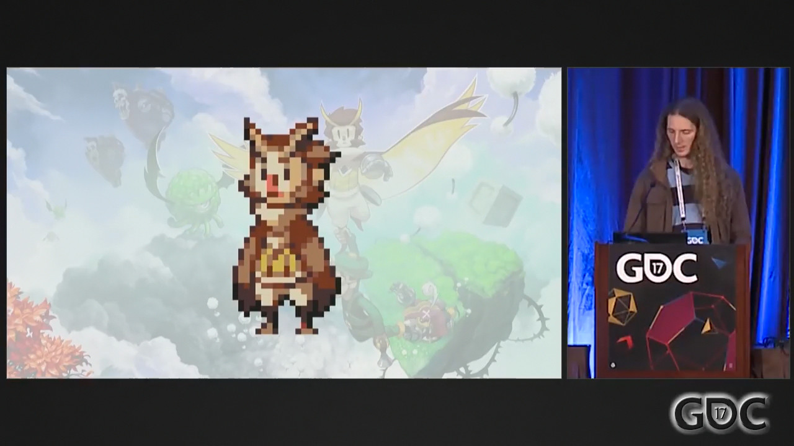
于是常常 我会用像素画来设计角色 这是设计最终稿之前的中间产物
这就是它在之前两个不同的设计之间的样子 在把最开始的速写转换到像素画的过程中，我需要选择最突出的元素 他的颜色分布，他的大脖子，对鬓角、眉毛的强调，这些都来自于小尺度的作品 你可以在一定程度上看出它是如何演化的 此外，再说一件小事，如果你看着你的设计，然后你觉得这些东西确实不错，但你不确定它们是否符合它的主题，那就试着移除它们 移出每一个部件，看看是什么让你觉得奇怪，然后再把它们组合到一起，加以强调
好的，那么一个话题 如何在实际角色身上应用抽象设计的原则

来看看这里... 一个常见的问题是，某物的设计不匹配世界里其他东西的风格
这也是传统意义上的像素画更容易迭代的原因 举个例子，当你旋转一个像素画的时候，你会打破连续性

当你设计角色、想让其融入到世界中的时候，连续性是最重要的东西 但这也适用于现实中的角色
接下来我会用漫威举个例子，看看漫威是如何把他们的漫画角色转换到电影中去的 展示一下他们是怎么做的
 表面上看，基础的想法是稍微降低他们的饱和度，给他们的衣服加上更多细节，这样一来他们就能融入世界了
但我的观点是，那些画中的不起眼的现实事物，才是让他们融入世界的原因
表面上看，基础的想法是稍微降低他们的饱和度，给他们的衣服加上更多细节，这样一来他们就能融入世界了
但我的观点是，那些画中的不起眼的现实事物，才是让他们融入世界的原因
用美国队长举个例子
这里的是电影里的版本
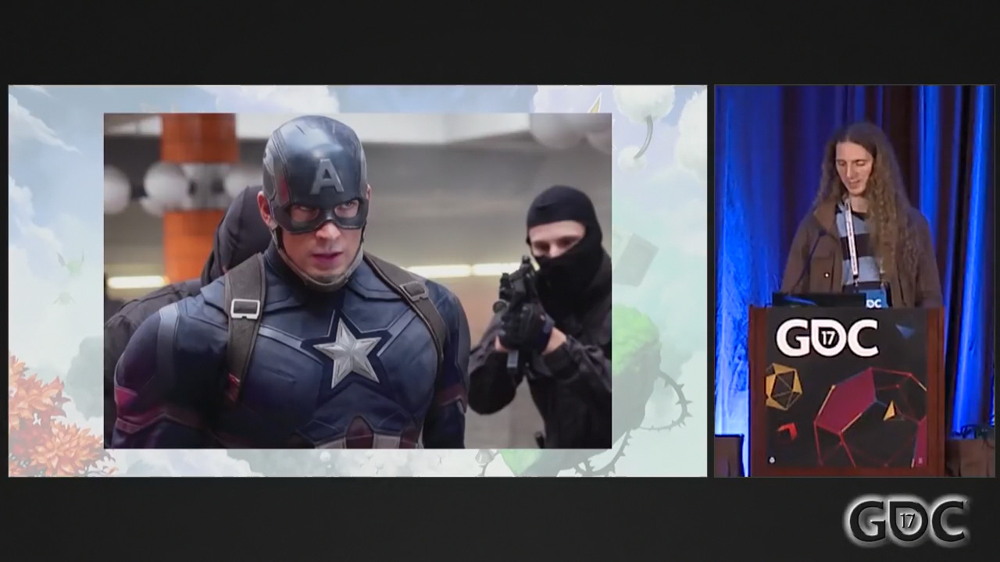
他们做的事情之一是，把他周围士兵身上的微妙设计线索整合到了他身上
他的皮带、头盔上都有这些
这还是那个角色，但因为他有那些共享、连续的设计特点，他才会有一体感
 如果你反而用了...比如说漫画书里的设计，他的那种鱼鳞盔甲一样的东西
那他所处的空间就和他代表的空间之间就不再有相似之物
如果你反而用了...比如说漫画书里的设计，他的那种鱼鳞盔甲一样的东西
那他所处的空间就和他代表的空间之间就不再有相似之物
你几乎可以对所有东西都这么做，如果你的电影里有巨大的霓虹风景 你会希望你的角色看上去就像是那霓虹景色一样， 如果你的角色是黑暗坚韧的，你会希望他们能反映出这一点 所以，基于你世界中的其他部分来进行作画 你的角色就会更鲜活
最后一点想法，因为时间不是很多 我说了很多不同的设计原则，也许不是全都有道理 但我鼓励各位打破我说的每一件事 因为我就只是个一般人，我的观点是很泛泛的 我确信在座的大多数人都能想出比我台上十分钟说的，更有趣的角色设计法 所以，感谢聆听
QA SECTION
太棒了，谢谢各位，我想为这些嘉宾再鼓一轮掌，感谢他们参与 我非常感谢各位的参与，这个座谈会有点像是个实验，试试我们如何才能在GDC引入更多的艺术演说和展示
再提醒一下，请填一下你们的调查表，让我们知道你的想法，我们会在这个形式的基础上进行迭代
我觉得我们还有一时间可以用来提问，这里有一些麦克，如果有人有问题想问嘉宾们的话 请直接问吧
你好，我的问题是给Richard的 当你设计那些小插图的时候 你是直接把你喜欢的设计加进去，然后呈现给队伍里其他人的吗？ 还是... 嗯，是问你的，抱歉
基本上我想说的是，也许我当时没说清楚，但一旦你设计好了那些场景，想替换服装设计的时候是非常容易的 我意思是，大部分时候，我们的试镜和服装是两波来的，顽皮狗是这样的 服装方面，一旦我们知道了那个人的样子、民族、年龄，就那些我们需要考虑的东西 它其实就只是那时候专用的服装 一旦你设计好了场景，我喜欢换上我所有的服装，在环境中测试他们 还是那句话，你有多块拼图在手 叙事存在于那里，你需要配合叙事测试服装 那些刻板印象和陈词滥调，在我开始这一套流程的时候 马上，他们就显得太过了，这样一来，你是直接把“他是坏人”、“他是...”扔到观众脸上了，你发现微妙细微得感觉才是你想寻求的，你想，我记得我们好像没人说过，你想支撑那个设计，而不是让人们从中分心 这回答了你的问题吗
是的，但就是澄清一下，我的问题更像是关于“让团队接受”的， 你提到说他们一开始不喜欢健壮角色的眼睛，但之后他们接受了，这是因为你呈现给他们全部那些东西了吗？ 包括你喜欢的设计？
就像我在展示里面说的一样，我一开始拿出了角色的列队展示，然后我意识到了人们做决定的时候，能利用的信息太少了，于是我设计了一个场景，准备了章节，你懂的 利用构图技巧和镜头的设置 之后我在其中复用了之前的服装 我坚信那个眼镜是个好设计 我认为这种呈现方式更好，他们确实也是如此，第二天他们都说“我们想了想，眼睛确实不错” 好的，行吧，你觉得这样说的通吗？
谢谢
身为作家，我想知道你们想让作家怎样描绘一个角色概览？像是一些特定的元素之类的
我至少能从我现在团队的角度来说一说，Sean Vanaman，是Campo Santo的作家也是奠基人之一 他经常通过写小型对话片段的方式来构建角色 对我来说真的超级有帮助 就别只在纸上写“他们很古怪”、“他们很野蛮”之类的， 能通过情景和彼此间的互动来观察他们，给了我很多发挥的空间 这帮助我的方式就和...
用场景实际展示他们一样，这也能给我一些进行构建的基础， 能真的拿到对话，或像是垂直切片、可能的场景一类的东西， 都是非常有帮助的，哪怕在后期生产里，它们彻底成为了废案 这些是我觉得很有帮助的东西
我也觉得，如果你对“观众该对角色有什么样的感觉” 这点有清晰认识的话，比如你希望他们是脆弱的， 或者你想让他们感觉很强力，就是这类的，请一定让视觉艺术家知道， 这很重要
嗨，是给Claire的问题，你先前放了一整个有关参考的部分， 但你没有时间只好粗略带过了，我想如果有更多一点时间的话，你，或者任何人有什么对此想说的吗？
是啊，参考真的超级重要，对我的工作流程很重要，我非常推荐 假如你正在设计一个角色，你有了原始的想法，没被参考左右，先把这个记录下来 然后开始调查，进行研究，通过这种研究将参考内在化， 因为你会渐渐开始形成这种肌肉记忆， 然后你在自己的脑中能够建一个内置图书馆， 以提供绘画的材料，这比不断划过Pinterst页面要好得多
之后你要把参考内在化，只要你达到这一层了， 你需要减慢速度，决定要打破哪些参考，因为参考是一种指导
将你的设计引导到正确方向的一种存在， 但这又说回来了，你在制作一个游戏，他有俩字其他角色和故事的情景， 所以要能决定自己改参考什么来绘画
重要的是如何内在化它们 如果你有喜欢的画师，要注意观察他们喜欢的画师，而不是直接看他们的作品
谢谢
我也要加一些东西，关于寻找参考，我发现在这个过程里， 将角色团队的其他成员包含进来也是很重要的 特别是如果你知道哪个模型师、动画师会参与进来的时候， 让他们也在早期参与进来，游戏产业的角色制作过程中有一部分涉及到很多分开的团队， 你知道的，有的人得面对这些3D机器， 其他人承担了太多责任，没有足够人参与到讨论中来
所以我觉得当你在收集参考的时候，走走，和角色模型师聊一聊， 让他们也找找参考是极好的，让他们也付出一些心血，整合他们的想法
一个关于你们决策过程的简单提问，在你们设计那个带眼镜的女孩的过程中，从什么时候开始，你们觉得可以向，基本就是艺术部门之外，展示概念美术和整个故事了呢？ 此外，你们如何阻止那些混乱的观点出现？就那种来自商界人士，可能不那么擅长审视整个故事、理解意思的人的观点
我觉得 呃 我觉得 我是说，在你设置好那些场景之后，我觉得至少在那时可以开始了 没有什么是永远完美的，这是个有机的过程，没有游戏的制作过程是一致的， 你永远都需要随机应变
至少在顽皮狗，我们的架构是非常平的， 所以你能从不同的部门得到很多观点，你必须要灵活面对这些， 你得意识到你的想法并不总是最好的，就算你觉得这不合你的品味， 但我们并不是在追求你的品味
我的建议是，拿出你的最高水平，你懂的，向前走， 但在观点传过来的时候，永远保持灵活的态度
这不容易做到，对概念设计师而言，特别是如果你坐在过道旁，像我一样 所以一直有人说什么“噢这是啥”，一天说是10次“对啊，是这样”， 你又得解释一遍 这很困难，但我觉得你需要灵活应对， 记住这不是你一个人的孩子，这里有一堆超极有才华的人， 你能做的最好的事就是让他们为你的作品感到激动，是啊， 我会建议说，慢慢来，保持灵活，别坐在角落里一个人干活
谢谢
我好奇的是，你之前说过要抛开一些套路、原型、刻板印象， 我想知道你们如何找到那种熟悉、很容易理解的简单概念和 更加细微的、有深度的角色之间的平衡的？你们如何找到合适的点？
要是所有人都能说说就太好了
从我们的角度来说，我们非常关注电影以及里面的服装， 我们希望让《神秘海域》的风格，嗯，更强烈一些，《最后生还者》算是有些微妙 但我想说的是，我们有这么有才华的动画师，演员，剧作家，有很多东西齐头并进， 还有很多其他的东西参与进来，向观众传达信息，比如构图， 还有我之前说如何呈现作品时提到的其他东西，现在对我来说，微妙是最好的方案
我想说，我现在做的角色，大部分都是T恤和牛仔裤，我就摆开一堆照片，我照着他们做速写，嘟囔着“这又是个穿T恤牛仔裤的老哥”
保持微妙，因为那个人会有一定的行为，那个硬汉有个非常有趣的故事，我们在吃饭的时候聊过
你想想，Joe Pesci是我最喜欢的硬汉之一，但如果我把他放在硬汉角色列队之中，没有人会选他的
但你处在那个场景中的时候，那种张力，他把所有人都吓个半死，这时候你知道，这种感觉真的传达过来了，所以，我也不知道
回答问题的话，理论上来讲，在《最后生还者》这种藏的比较深的游戏里， 也有很多东西可以传达信息，但我的意图一直都是支持进行中的所有东西， 而不是让人分心
我认为这真的和游戏叙事，或者说你做的任何东西的叙事，是高度相关的，你要思考叙事的需要是什么，观众们在经历故事的时候，应该对此产生什么样的情绪 有的时候你会感觉...比如说你需要设计一个有点宅的角色，你可能会觉得宅男都带眼镜， 那我就给他们也戴上眼镜好了，这种意图是很明显的，这也许是该做的事情，但这不是说你 就一定要这样，你不需要觉得“不行，宅男不能戴眼镜，因为他们的刻板印象就是戴眼镜”， 不是这样，这更像是
做你该做的，但是要有意图
比如说这个角色就是要给观众这种感觉 我会贴近这个方向进行选择，就比如如果我想让一个角色看上去很脆弱， 我会让他们的形体变的比较小，如果你想让他们 融入到背景之中，也许他们不能包含任何亮色， 也许所有的颜色值都非常接近，这样一来当他们进入自己的情景之中的时候 他们就会更能融入进去，所以就是要思考这些东西，然后为他选用独特的某种风格， 让他适配情景的某些要求
我想说的就是，我觉得狗是一种非常好的角色设计灵感来源， 你能看到那种招人厌的小狗还有那种非常可爱的小狗，而且它们之间的体格差距并不是 并没有真正定义了他们的角色，我觉得这样思考角色设计也是很好的， 像是演出和动画一样，这就是为什么让那些团队参与进来之后， 你可以带给角色更多东西，而且能用非常有趣的方式，针对观众的期待发挥 这回答了你的问题吗
当然了，我站着只是想鼓励各位接着回应的，谢谢， 如果你也能分享一些想法的话，那座谈会全员就参与进来了， 会真的很不错，我只是说现在，你之前也做了很多分享
这个是开着的吗？好的， 我实验过很多次的一个东西是，以形状为基础构建角色设计， 我所有的角色、我常做的主要角色， 都是先基于某种基本的形状，然后向各个方向探索， 看看有什么让他们到位
我这里有一个我特别喜欢的角色，叫Alphonse，我把他设计为一个梨形， 他就长成这个样子 他人格的有些部分，来自我于我对他跑步姿态的观察 因为他是个大块头，这真的很有意思，我开始思考 这被背后的机制是什么样的，因为他有个非常大的...呃， 屁股，我就这么说吧，我开始思考这个，然后我意识到这不合理，不符合解剖学原理， 为什么会这样呢？最后我突然想到，他是个机器人
他是个机器人，这就暗示了很多他的行动方式， 还有他的各种动机，最后我给所有角色都过了一遍这样的流程
我有一个主要角色，他的脸是有点椭圆形的 为了把这个均衡一下，我给他戴了一顶非常大的帽子， 这个帽子给了他很多能表达情感的特征，这也是他最后 变得非常肤浅、害羞还有些懦弱的原因，因为它必须常常和这个帽子互动， 而你能做的也就是把它拉下来盖住脸而已
我觉得图形，改变他们、使用他们、探索他们 是了解你的角色的好方法
我想说的就这些
嗨，这是给Richard的问题，你的作品很多都非常漂亮， 组合了明显的线条和扎实的底色，所以我好奇的是， 从技术执行的角度来说，你怎么处理那种对特定纹理有要求的作品呢？ 你有在工作中遇到这样的问题吗？ 就是说你必须要用单一颜色作画，以供后期展示纹理， 或者只能打型，不能上色，你们会这样做吗？还是说有绕开这个情况的办法？
我认为这种强调线条的方式，我现在处理作品的方法，对来我说真的很有意思， 作为一名画师，我是在过去几年里才开始这么做的， 幸运的是我们的工作室里，我们的创意总监是个漫画迷
Neil Druckmann一个超级漫画宅，他喜欢看类似的东西， 而且他能从中读出内涵，我们有时也会上手需要大量作画的项目 比如牛仔裤加运动鞋，我都不知道我画过多少个拿机枪的老哥了， 但他们都知道这是军靴，那是军用裤子
又说回来了，我在收集参考的同时，也会和那些模型师交流， 所以所有人都是在同一个频道的，当我分发那些概念设计的时候 每个人都明白他们在看什么 因为我们已经坐下来谈过都有哪些可以利用的材料，你和技术民工们聊聊军队老哥的次级运动，和材质画师聊聊金属疲劳带来的差别 比如手榴弹啊，或者任何其他东西，所以就这层意思来说， 我很庆幸我们有开放的讨论环境，
有的角色就需要你画到吐，疯狂搭建场景，玩过《神秘海域4》的话， 里面有好多角色都是这样，只被渲染到了描线的级别， 那个在决斗中去世的老冒险家，剧透警告！有个老冒险家是这样的， 这种情况下你需要采用不同的粗略，这个基本就是搭场景搭出来的
这回答了你的问题吗？
是的，当你面对额外工作的时候， 你算是用了不同的方法来解决问题，而不是只依靠线条画
是啊，我觉得我说的很合理，因为我已经试着尽可能和整个楼层里的人交流， 还有角色部门的其他人，我发现这样一来，很多事情运转的很顺利，把什么东西都渲染到位变得毫无必要，我是说，所有需要知道的人，只需要坐下来看看参考就可以了 现在我经常对着参考搭场景，做的太满不合理， 造型语言还没决定，角色的重量分布没决定，头盔应该在哪里之类的
所以对我来说，我有点喜欢上这种重线条的漫画风了， 这个很有意思，而且做起来很快，你懂的，高速出图
好的，谢谢
我认为关于概念美术，一个很重要的点是，概念美术不是追求制作成品的， 画完这些东西的想法真的很诱人，因为这些是你的画 但你自己是更大流程的一部分， 我发现我刚进入业界的时候，我经常画大量精力把所有东西画满， 因为我想积攒出一套精美的履历，但我也可以简单画点线稿， 剩下的留给纹理，而这也能很好的传达想法，可能还会更好
作为一个概念设计师，我知道大家都会上Artstation去看那些作品集， 在那里所有画都被打磨到牙齿，但有时，那都是堆被打磨出来的垃圾设计， 我宁愿看到那些未完成的好设计，能传达想法的设计，而不是画了一周的废物
我认为这是今天在座所有人说的最有用的话了，这有些时候真的会让概念设计师会错意， 你看看那些CG讲座，你看Artstation，你看到大量精致的画， 但你不应该追求那些，你追求的是制作一个游戏，抱歉，我没法强调的更好了， 这真的很正确，你在制作一个电子游戏，不是开画展
谢谢
嗨，我叫Christine，这是给Laura的问题， 你提到说你会对不同表情的面部特点进行组合， 比如惊讶或者悲伤一类的情感，你是随机的组合他们吗？还是说有内在的规则？
这种组合肯定是经过思考的，要从哪个表情中选择什么部分， 这是和最后的表现相关的，你还要考虑你自己对它的想法， 这就是为什么我说要随身准备一个镜子，如果你在思考某个情景里要做某个表情
我...我的角色的表情是什么样的，你可以用镜子马上测试一下， 一但你有了一些基础的东西，你就可以考虑一下 “好吧，也许这个角色 和他交谈的对象相比，更有点嘲弄人的感觉，他在俯视他们”， 所以你可以在讥笑上加上一点厌恶，给表情加上一点嘴唇的弯曲 这更像是一种艺术家的工具，而不是A加B等于C的死板公式， 这只是一种拆解分析的方法，思考你在做什么的方法
就像演员一样
基本上就是这样，这其实是动画师的工作，他们的工作， 他们应该早就知道这些了，对他们来说都是旧闻 但对一个2D画师来说，我觉得这个很新颖
谢谢
我的提问是给Simon的，你的开发过程长达几乎十年， 我很好奇你过多久，会需要对你的主要角色， 或者说任何角色，进行一次设计上的重新迭代？ 你觉得其他艺术家的看法很重要吗？
是啊，应该是差一个月九月...啊不，九年，时间真的挺长的， 主角其实是我们纠结的焦点， 因为它是字面意义上这个项目中我最先做的那部分， 在做了5年之后，我发现这并不是那么好， 你不能再做200多个动画来弥补这点，于是我们补偿的方法是， 我们让动画更加流畅，对你的动作进行强调， 我们昨天做了个演说，演示了跑步动画在前后的差别 展示了转向的方法，如何在你做飞行等动作时，对运动进行强调
至于游戏本身，一个好的地方是我们使用“大素材”来制作游戏， 而不是“元件集”，我们用的是大像素块， 你可以随意放置他们，这也意味着我们可以轻松换掉他们， 我们做了很多大件，而且大部分早期的老作品都在游戏正中部分， 所以当你在那里飞过的时候，你会发现这个质量水平有点下跌， 而教学关是在开发后期、最后的阶段制作的， 我认为我做了一个几乎3000像素的卷轴场景， 我就是想证明一下我真的能做出来好东西
我感觉这是种补偿的好方式，我知道这个精灵已经有些老了，但 任何时候都可以用动画来弥补一下，所以我们就是这样解决迭代问题的
谢谢 感谢嘉宾们的精彩展示，如果有任何观众提问的话， 你们可以用大堂对面的分会议室
注解
Simon提到的精灵, 指的是spirte, 一种2D游戏引擎中的机制 译文中的“元件集”, 指的是tileset 可以理解为2D美术的贴图包, 瓦片一样用于构建更复杂的美术素材的"原始素材包"